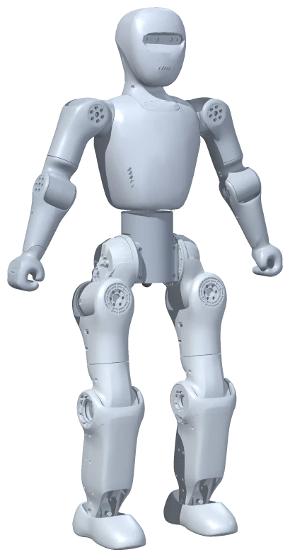
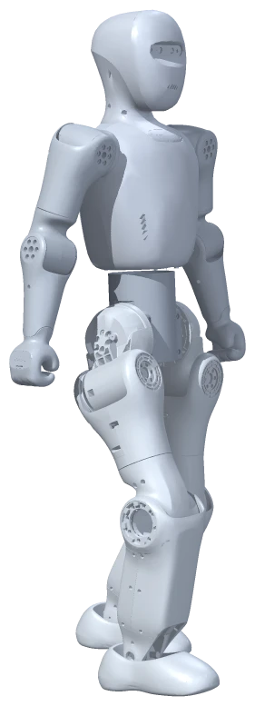

读 · 改 · 跑 · 讲
先预测、读代码，再到同一个小布米世界运行。每课改一处，用自己的记录解释变化。
一台小布米，小组轮换
操作员写代码，观察员看动作与输出，记录员留下证据。也可以一起观察教师投影。
把学习留在这里
任务单和代码草稿可直接填写，自动保存在当前浏览器；支持打印本课，不上传填写内容。
适用基线：小学 5–6 年级，每课 40 分钟。前 8 课学习基础，后 4 课综合应用。编程控制使用已有行走策略与动作数据；本课程不训练新模型。
单元一把动作写成程序
单元二用数据和判断控制
单元三颜色与动作数据
单元四综合创作与观察
三件事，始终分清
运动指令：给已有行走策略目标，不等于精确位移；轨迹回放：播放已有动作数据，不计算实时物理平衡；状态与输出：只说明程序读取或打印的内容，不代表自主识别人、障碍物或意图。
机器人配图沿用原 H5 的真实模型离线渲染；流程图是程序示意，都不是本次网页运行截图。学习结果请以课堂观察和记录说明。
TEACHER GUIDE
课程总览与使用说明
课程定位与使用
这是一套独立的 12 课编程课程，承接“和小布米一起理解具身智能”的体验，用面板已有示例学习程序表达。设计基线为小学 5–6 年级，每课 40 分钟；初高中可加深分析，低年级可由教师操作、学生口述。
每课 A 预测、B 运行、C 修改、D 解释；学生页只保留任务与记录，教师页含教案、参考回答及对应学生学习单。每个网页会话只有一台 Bumi，安排小组角色轮换。
课前按本课完整步骤预演，不需要安装仿真软件。首次进入课堂世界等待加载，按页面提示处理；编程入口或资源不齐时向维护人员反馈，不把备用阅读当作实操。
打开小布米世界 ↗12 课路径与可观察成果
| 课次 | 本课学习 | 解释与成果 |
|---|---|---|
| 01 · 顺序执行 | 按代码顺序说出视角、前进、等待和输出四个步骤。 | 只修改等待时间，用两次记录说明哪里变了。 |
| 02 · 转向 | 区分向前移动与原地改变朝向。 | 只替换转向指令，对照记录左右转的区别。 |
| 03 · 循环 | 找出循环的开始、结束和每轮重复的内容。 | 只改变循环次数，核对动作轮数和输出是否一致。 |
| 04 · 变量 | 跟踪 speed 在第一段和第二段前进前保存的数值。 | 只改一个初始值，记录目标速度与实际观察，避免把指令当测量结果。 |
| 05 · 条件判断 | 指出读取状态、判断条件和显示结果三步。 | 区分“程序读到的状态”与“我从画面作出的猜测”。 |
| 06 · 自己设计 | 用自己的话说明 move 中三个参数分别控制什么。 | 每次只改转速的正负号，比较转向方向。 |
| 07 · 配色 | 区分整机配色方案和单个部件配色。 | 用一次单色值修改说明外观变化与动作能力的区别。 |
| 08 · 回放控制 | 从当前动作目录区分显示名称与片段 ID。 | 区分现实等待时间、片段动作时间和物理行走仿真。 |
| 09 · 迎宾小助手 | 按顺序说明迎宾程序的准备、演示与收尾。 | 只改一个参数，再用记录解释发生的变化。 |
| 10 · 彩色巡逻队 | 找到列表、轮次编号和每轮使用的颜色。 | 修改列表中的一个值，观察它影响哪一次重复。 |
| 11 · 小小舞台导演 | 用目录查询与条件判断说明为什么能播放所选片段。 | 为行走与回放的衔接写出有依据的舞台说明。 |
| 12 · 速度观察员 | 从试验列表找出变化的速度与保持相同的运动时长。 | 区分目标指令、策略状态和真正观察到的移动现象。 |
通用操作与判断
| 操作／读数 | 教学中怎样理解 |
|---|---|
| run | 开始当前程序；先结束上一次，再运行修改后的版本。 |
| Stop | 中止程序、清零并暂停仿真；正在回放时停止并归位。折叠面板不会停止，返回主面板会停止并保留会话草稿。 |
| reset | 停止、清零并重置姿态；保留当前代码，配色另行恢复。 |
| wait(秒) | 等待现实时间；不是暂停整个世界或精确运动计时。 |
| forward / turnLeft 等有时长运动 | 按仿真实际运动时间推进，结束后清零；转向示例是原地转。 |
| status().healthy | 读取时行走策略是否正常，不是碰撞检测、访客识别或任务成功。 |
| status().speed | 当前速度指令，不是实测行走速度。 |
| 动作回放 | 已有轨迹的播放，停止后归位并保持暂停。 |
评价与课堂组织
重点看学生是否把预测和实测分开、能否说清改了什么、结论是否有记录支持。允许口述、指图、同伴代写，不以设备性能或程序一次运行成功与否评分。课末确认 Stop，保留现象记录。
35–45 分钟的调整、预期现象、误解、支持与提高分别在逐课教案中提供。当前内容是课程设计稿，尚未经过课堂试教；每次备课需核对当前世界的界面和资源。
资源与来源
界面风格、世界入口适配与机器人配图沿用同仓库 BumiLessons-H5；完整示例来自 Paracraft 共享 BumiCodeExamples.lua，API 语义依据 BumiCodeRunner.lua 与 BumiCodePage.lua。查看 Bumi NPL API 帮助 ↗。
回放动作来自 Cryyzz/Lafan1_Retarget_To_BUMI-GMR 的既有数据，固定版本 00287add3026f38bb6748e15c857790b2a3abcd6，采用 CC-BY-NC-4.0：仅限非商业使用，展示需署名。课程不附动作数据，世界中的具体资源与限制以当前版本说明为准。
顺序执行
把一件事拆成按次序完成的指令

教师教案 · 小学 5–6 年级，40 分钟的设计基线 · 本课学生学习单
本课一览
核心问题：同样四行代码，为什么小布米要先做完前面的事，再显示最后一句话？
- 学生能用四张流程卡或口述复原示例的执行顺序。
- 学生能指出 forward 的时长结束后清零，wait 是程序等待而非停止命令。
- 学生能提交原版与单一修改版的观察记录，并用输出作为执行证据。
对应示例：01 顺序执行。成果为 A 预测、B 运行记录、C 一次修改、D 证据解释。允许口述、指认和同伴代写。
课前用同一世界预演
打开小布米世界 ↗- 课前打开项目 5316902，按学生步骤预演“01 顺序执行”，核对“NPL代码编程”、run、Stop、reset 和输出区是否可用；若线上入口尚未更新，记录问题并采用备用读码活动。
- 安排操作员、观察员和记录员，选地面上一个固定参照物；说明 reset 重置姿态但不清除代码，运行前应核对当前示例。
- 准备四张空白流程卡和计时工具。说明本课只比较先后与等待间隔，不测精确距离，也不以网页运行快慢评分。
等待世界加载，加载小布米，进入“NPL代码编程”，选本课示例。先确认 run、Stop、reset 和输出区可用。没有编程入口或回放资源不可用时反馈维护人员，使用下方备用方式，并如实记录未完成网页实操。
40 分钟课堂流程
| 时间 | 环节 | 教师与学生活动 | 追问 |
|---|---|---|---|
| 5 分钟 | A 先排步骤 | 学生先读示例并填写预测，用四张卡排出自己的顺序。先收集理由，不立即判定。 | 你从哪一行看出这句话应该什么时候出现？ |
| 8 分钟 | 读懂四种指令 | 结合代码逐一说明视角、带时长运动、现实等待和输出；让学生指认括号、引号与参数。 | forward(2) 的 2 和 wait(1) 的 1 分别在等什么？ |
| 12 分钟 | B 运行并留证据 | 完成原示例的一次观察，交换角色后再核对一次；记录动作、等待和文字的先后。区分地面位移与原地小幅调整。 | 哪一条记录能证明程序走到了最后一行？ |
| 10 分钟 | C 只改等待时间 | 只改 wait 的 1 为 2，重置后运行，比较两版并标记未改变的代码。邀请一组说明修改前后的证据。 | 这次比较能说明前进时间变长了吗？为什么？ |
| 5 分钟 | D 解释与收尾 | 学生完成两道反思与自评，教师抽查顺序和两种时间的表述；点 Stop 收尾。35 分钟课压缩第二次原版观察，45 分钟课增加挑战。 | 请用“我改了……，我看到……，所以……”说一句有证据的话。 |
35 分钟时缩短展示与拓展各约 2–3 分钟，保留 A–D；45 分钟时增加一轮 C 修改验证。2–3 人共用时轮换操作员、观察员、记录员。
示例与讲解重点
bumi.camera("robot")
bumi.forward(2)
wait(1)
print("我完成啦！")
- 切到机器人视角
- 前进 2 个仿真运动秒
- 现实等待 1 秒
- 输出完成文字
bumi.camera("robot")- 把观察镜头对准小布米。这个视角便于看动作，不表示我们正在读取机器人眼睛里的画面。
bumi.forward(2)- 向前运动 2 个仿真秒，结束后运动指令自动清零。这里省略的目标速度采用默认值 0.5 m/s；实际路程要观察，不能直接把 2 当成 2 米。
wait(1)- 让程序按现实时间等待约 1 秒再往下走。它本身不发送停止指令；此例进入等待前，forward 已经完成并清零。
print("我完成啦！")- 在输出区显示引号里的文字。英文引号和括号需要成对保留，文字内容可以按任务修改。
A–D 参考回答与观察依据
| 学生任务 | 参考与判断依据 |
|---|---|
| A | 参考预测是：切换镜头、完成前进、等待，然后输出。允许学生先提出不同猜想，只要理由能对到代码；预测本身不当成观察结果。 |
| B | 正常完成时，输出区最后显示“我完成啦！”。forward(2) 完成后运动指令已清零，wait(1) 期间没有新的运动命令；姿态可能有小幅调整，不能要求绝对静止或固定距离。 |
| C | 把 wait 改为 2 后，前进结束到输出出现之间的现实等待更长；前进指令与其时长未改。网页调度可能带来少量延迟，不用秒表误差否定顺序关系。 |
| D | 可接受解释：“输出证明程序已到 print；不动只能说明当时没有明显位移。此例先由 forward 完成并清零，再由 wait 等待，不能把停止归因于 wait。” |
参考描述用于核对概念；学生实测可能不同，先核对操作和状态，再讨论原因，不要求数据符合预设。
常见误解
- 把 forward(2) 解释为走两步或两米；应指向参数是仿真运动秒数，路程另需观察。
- 把 wait 当作 Stop；用流程指出前进已经结束，Stop 则会中止正在运行的程序。
- 把 print 当作语音播报，或把机器人视角当作机器人视觉感知；本例分别是屏幕文字和观察镜头。
怎样评价
- A：能排对四个步骤，并指出自己用于预测的代码。
- B、C：两版记录分开，修改仅涉及 wait 参数，能说出前进代码没有改变。
- D：解释同时引用程序位置和实际观察，不把预测、空白或设备故障编成结果。
评价记录是否支持解释、修改是否清楚、表达是否如实。不按设备速度、打字快慢或动作是否炫酷评分。
支持与提高
需要支持的学生／低年级：低年级或初学者使用四张中文图卡，由教师运行，学生指认“前进—等候—文字”；允许口述并由同伴代写。
初高中与进阶：初高中学生增加前后两条 print 作为检查点，讨论现实等待、仿真时间和界面刷新不同步时，哪些证据仍能支持执行顺序。
设备或网络异常时
网页或 NPL 入口不可用时，以完整示例做桌面排卡和角色扮演：一人读程序、一人扮演执行者、一人记录。观察表注明“未观察 Web，以下为读码推演”；不填写虚构运行时间，课后反馈入口问题。
备用材料用于阅读程序和预测，不能当成本次 Web 实操证据。保留问题描述，课后再核验。
课后记录
学生学习单 · 小学 5–6 年级 · 40 分钟 · 可小组共用设备，也可观察教师投影。
同样四行代码，为什么小布米要先做完前面的事，再显示最后一句话？
今天要做到
- 按代码顺序说出视角、前进、等待和输出四个步骤。
- 把运动持续的时间与程序等待的时间分开记录。
- 只修改等待时间，用两次记录说明哪里变了。
先进入同一个世界
打开小布米世界 ↗等待世界加载；需要时点击“加载小布米机器人”，再打开“NPL代码编程”。在“选择示例”中选“01 顺序执行”，也可复制下方代码到输入框。
指令库中的图块可拖入或点击插入；需要调整参数时，可编辑图块参数或代码。先读程序，再点 run。需要中止时点 Stop；重新从起点比较时，可先点 reset。运行结果看小布米、面板状态和下方输出。
本页用来学习、复制和记录，程序在小布米世界中运行。若当前世界没有“NPL代码编程”入口，请告诉老师，并记录本次未完成网页实操。
A先预测，再读代码
先不点 run：你认为“我完成啦！”会在前进开始时出现，还是在后面出现？等待的那一段，小布米会怎样？写下理由。
- 切到机器人视角
- 前进 2 个仿真运动秒
- 现实等待 1 秒
- 输出完成文字
bumi.camera("robot")
bumi.forward(2)
wait(1)
print("我完成啦！")
读懂这几个地方
程序从上往下执行。前进指令要等指定的运动时间完成，才会进入下一行。
括号里的内容告诉指令怎样做。例如 forward(2) 中的 2 是运动秒数，不是步数或米数。
print 把文字写在面板下方的输出区，方便我们检查程序走到了哪里；它不会让机器人开口说话。
bumi.camera("robot")- 把观察镜头对准小布米。这个视角便于看动作，不表示我们正在读取机器人眼睛里的画面。
bumi.forward(2)- 向前运动 2 个仿真秒，结束后运动指令自动清零。这里省略的目标速度采用默认值 0.5 m/s；实际路程要观察，不能直接把 2 当成 2 米。
wait(1)- 让程序按现实时间等待约 1 秒再往下走。它本身不发送停止指令；此例进入等待前，forward 已经完成并清零。
print("我完成啦！")- 在输出区显示引号里的文字。英文引号和括号需要成对保留，文字内容可以按任务修改。
B运行一次，留下证据
- 在小布米世界中确认机器人已加载，打开“NPL代码编程”，选择“01 顺序执行”。先按 reset，让本次观察从重置后的姿态开始。
- 一人读代码，一人看机器人，一人看输出区。点一次 run，观察前进、等待和文字出现的先后；不要在程序运行中反复点 run。
- 等面板显示“运行完成”，把看到的现象记到“原示例”一行。用地面的固定参照物判断是否仍在移动，不能只凭腿部小幅摆动判断。
- 完成任务 C 后，按 reset，再运行修改版；最后点 Stop，确认程序已停止。若没有观察到现象，就如实写“未观察到”，不要补写结果。
我的观察方式：
| 运行版本 | 动作与文字的先后 | 等待时看到的状态 | 与预测相同或不同之处 |
|---|---|---|---|
| 原示例 | |||
| 修改等待时间后 |
C改一处，再试一次
只把 wait(1) 改为 wait(2)，其余代码保持原样。运行前先预测：哪两个事件之间的间隔会改变？运行后用表格核对。
只改等待时间；保留 forward(2) 和输出文字，才能看清这一次修改的作用。
还有时间，试试
不增加运动指令，只在前进之前增加一行 print("准备出发")。先在纸上标出两句输出各处在流程的哪里，再决定怎样检查。
D用记录解释
自我检查
收尾：点 Stop，确认程序已停止。回放课确认片段已停止并归位。需要恢复外观时，先保留代码，再点“返回主面板”→“配色”→“恢复默认配色”。重要作品请先复制另存。保留本次记录，不补编没观察到的结果。
转向
先改变朝向，再决定往哪里走

教师教案 · 小学 5–6 年级，40 分钟的设计基线 · 本课学生学习单
本课一览
核心问题：两次都是“前进”，为什么转向之后，小布米走向了不同的方向？
- 学生能用机器人朝向解释两段相同前进指令的方向变化。
- 学生能区分本课代码的原地转向与边走边转，并用观察支持表述。
- 学生能只替换左右转指令，提交两版路线草图和比较结论。
对应示例：02 转向。成果为 A 预测、B 运行记录、C 一次修改、D 证据解释。允许口述、指认和同伴代写。
课前用同一世界预演
打开小布米世界 ↗- 课前在项目 5316902 的 NPL 面板运行“02 转向”，确认机器人、run、Stop、reset 可用；检查所选地面区域适合短距离观察。
- 选择能看到朝向变化的固定视角，准备空白纸、箭头卡或绘图区。提醒教师也不要把画面左右等同于机器人自身左右。
- 核对当前代码 turnLeft 的含义是原地转向。若学生熟悉主控制面板的转向按钮，说明两处调用的组合方式可能不同，今天按所读代码判断。
等待世界加载，加载小布米，进入“NPL代码编程”，选本课示例。先确认 run、Stop、reset 和输出区可用。没有编程入口或回放资源不可用时反馈维护人员，使用下方备用方式，并如实记录未完成网页实操。
40 分钟课堂流程
| 时间 | 环节 | 教师与学生活动 | 追问 |
|---|---|---|---|
| 5 分钟 | A 画出预测路线 | 学生用纸面箭头扮演机器人，画出前进、左转、再前进的路线，并圈出转向处。 | 第二个“前进”是沿纸的上方，还是沿机器人新的朝向？ |
| 8 分钟 | 读懂朝向与参数 | 对照两行相同 forward 和中间 turnLeft，解释原地转向与持续时间；先不要求算角度。 | 代码中哪一项变了，才让后一次前进方向不同？ |
| 12 分钟 | B 追踪实际路线 | 重置后运行原示例，学生按三阶段口令观察，记录实际路线和输出。对证据不足的转向位移使用“看不清”而非猜测。 | 你用了地面哪一处来判断朝向或位移？ |
| 10 分钟 | C 换一个转向 | 只替换为 turnRight(2)，用相同起点和视角运行，比较两版草图并交换解释。 | 为了只比较左右转，哪几项要保持相同？ |
| 5 分钟 | D 解释与收尾 | 用“同一行前进、不同朝向”完成反思，核对参数不是角度；点 Stop。35 分钟课只展示一组修改版，45 分钟课加同伴路线挑战。 | 如果我要求精确画出 90 度，这次观察还缺什么？ |
35 分钟时缩短展示与拓展各约 2–3 分钟，保留 A–D；45 分钟时增加一轮 C 修改验证。2–3 人共用时轮换操作员、观察员、记录员。
示例与讲解重点
bumi.forward(1)
bumi.turnLeft(2)
bumi.forward(1)
bumi.stand()
print("换个方向探索")
- 向前运动 1 秒
- 原地左转 2 秒
- 沿新朝向前进 1 秒
- 归零站立
- 输出探索文字
bumi.forward(1)- 沿当时的朝向前进 1 个仿真秒，完成后运动指令清零。示例里这行出现两次，但执行时的朝向可能不同。
bumi.turnLeft(2)- 以前后目标速度为零的方式向左转 2 个仿真秒，省略的目标转速默认为 0.5 rad/s。先看转向方向，本课不要求计算弧度。
bumi.stand()- 恢复归零站立，便于结束观察。它不是把机器人沿路线送回出发点。
print("换个方向探索")- 这句文字是执行到程序末尾的检查点。要把它与第二段前进的方向一起记录。
A–D 参考回答与观察依据
| 学生任务 | 参考与判断依据 |
|---|---|
| A | 参考路线是先沿初始朝向移动，在中间改变朝向，再沿新朝向移动。接受形状不同但顺序和朝向关系合理的预测；不能把草图中的直角当成程序承诺。 |
| B | 本例按前进、原地左转、前进、归零站立、输出的顺序执行。turnLeft 的前后目标速度为零，但仿真中的小幅漂移不应被判作代码在主动前进；两段移动距离也不要求完全相等。 |
| C | 替换 turnRight 后，转向方向相反，第二段前进相应沿另一朝向展开。持续时间与前进代码相同，不能仅凭本次图形断言左右路线严格镜像。 |
| D | 可接受解释：“forward 使用执行时的朝向。中间的转向改变了朝向，所以同样的前进指令走向不同。2 是运动秒数，实际转角和路程需额外观测，不能直接写成 90 度或固定米数。” |
参考描述用于核对概念；学生实测可能不同，先核对操作和状态，再讨论原因，不要求数据符合预设。
常见误解
- 按观察镜头的左右判断 turnLeft；先请学生指认小布米自己的正前方。
- 认为 turnLeft(2) 是转两度或固定直角；强调参数是秒数，默认转速也不等于实际角度保证。
- 把 stand 理解为回到出发点，或把仿真小幅漂移当作边走边转；需要区分指令含义与画面现象。
怎样评价
- A：草图标明初始朝向、转向位置和三个阶段，而非只画一条无方向折线。
- B、C：记录能区分两段前进与转向，修改仅更换左右转指令。
- D：能说出朝向是两次前进之间改变的状态，并主动限制角度和距离的结论。
评价记录是否支持解释、修改是否清楚、表达是否如实。不按设备速度、打字快慢或动作是否炫酷评分。
支持与提高
需要支持的学生／低年级：让学生手持箭头纸卡转身再向前指，由教师代操作；低年级只比较“转向前后朝哪边”，允许口述路线。
初高中与进阶：初高中学生保持目标转速不变，另设计改变转向时长的实验，讨论指令转速乘时间得到的理想转角与仿真实际转角为什么可能不同。
设备或网络异常时
无法打开世界或没有当前 NPL 入口时，按代码用箭头卡模拟执行，分别推演左转版与右转版。记录写明“纸面推演，未观察 Web”；精确角度、漂移和实际路线保留为空，不以推演替代实跑。
备用材料用于阅读程序和预测，不能当成本次 Web 实操证据。保留问题描述，课后再核验。
课后记录
学生学习单 · 小学 5–6 年级 · 40 分钟 · 可小组共用设备，也可观察教师投影。
两次都是“前进”，为什么转向之后，小布米走向了不同的方向？
今天要做到
- 区分向前移动与原地改变朝向。
- 用路线草图记录“前进—左转—再前进”的先后。
- 只替换转向指令，对照记录左右转的区别。
先进入同一个世界
打开小布米世界 ↗等待世界加载；需要时点击“加载小布米机器人”，再打开“NPL代码编程”。在“选择示例”中选“02 转向”，也可复制下方代码到输入框。
指令库中的图块可拖入或点击插入；需要调整参数时，可编辑图块参数或代码。先读程序，再点 run。需要中止时点 Stop；重新从起点比较时，可先点 reset。运行结果看小布米、面板状态和下方输出。
本页用来学习、复制和记录，程序在小布米世界中运行。若当前世界没有“NPL代码编程”入口，请告诉老师，并记录本次未完成网页实操。
A先预测，再读代码
把纸上的箭头当作小布米：先向前，再向左转，最后再向前。请先画出你预测的路线，并标明哪个位置发生了转向。
- 向前运动 1 秒
- 原地左转 2 秒
- 沿新朝向前进 1 秒
- 归零站立
- 输出探索文字
bumi.forward(1)
bumi.turnLeft(2)
bumi.forward(1)
bumi.stand()
print("换个方向探索")
读懂这几个地方
前进是沿小布米当时面朝的方向移动。转过身之后，同一个“前进”会沿新的朝向执行。
代码中的 turnLeft 或 turnRight 将前后目标速度设为零，再执行转向。它和同时前进、同时转弯的弧线动作不同。
turnLeft(2) 指转向持续 2 个仿真秒，不是转 2 度，也不是保证转 90 度；最终朝向需要观察。
bumi.forward(1)- 沿当时的朝向前进 1 个仿真秒，完成后运动指令清零。示例里这行出现两次，但执行时的朝向可能不同。
bumi.turnLeft(2)- 以前后目标速度为零的方式向左转 2 个仿真秒，省略的目标转速默认为 0.5 rad/s。先看转向方向，本课不要求计算弧度。
bumi.stand()- 恢复归零站立，便于结束观察。它不是把机器人沿路线送回出发点。
print("换个方向探索")- 这句文字是执行到程序末尾的检查点。要把它与第二段前进的方向一起记录。
B运行一次，留下证据
- 选择“02 转向”，检查代码与示例一致。按 reset 归位，选地面的固定参照物，并保持同一观察视角。
- 点 run：观察员依次喊出“第一段前进、原地转向、第二段前进”，记录员在草图旁补上实际看到的方向。不要把镜头里的左右直接当作机器人的左右。
- 运行完成后，在表格中分别记录第一段和第二段的移动方向，以及转向阶段是否有明显前后位移；找不到参照物时写明难以判断。
- 任务 C 前再次 reset，使用同一视角运行修改版。对照两版路线，再点 Stop 收尾；图中的转角只是观察草图，不标成精确测量。
我的观察方式：
| 运行版本 | 转向时看到什么 | 两段前进的方向关系 | 与预测路线的差异 |
|---|---|---|---|
| 原来的左转版 | |||
| 改成右转后 |
C改一处，再试一次
只把 bumi.turnLeft(2) 换成 bumi.turnRight(2)，保留数字 2、两行 forward(1) 和其他代码。先画预测路线，再重置运行并比较。
只改变转向方向，先保持持续时间与前进指令相同。
还有时间，试试
给同伴设计一条由“前进—转向—前进”组成的短路线，只用本课已有指令。先用箭头说明路线，再交换检查：每个参数表示什么，哪里还需要实跑确认？
D用记录解释
自我检查
收尾：点 Stop，确认程序已停止。回放课确认片段已停止并归位。需要恢复外观时，先保留代码，再点“返回主面板”→“配色”→“恢复默认配色”。重要作品请先复制另存。保留本次记录，不补编没观察到的结果。
循环
把重复的一组动作写进循环
教师教案 · 小学 5–6 年级，40 分钟的设计基线 · 本课学生学习单
本课一览
核心问题：想让小布米重复三次相同任务，需要把整段代码复制三遍吗？
- 学生能正确标出 for 到 end 的循环范围，并指出循环后的 stand 只执行一次。
- 学生能把 i 的取值、输出轮次和动作组数逐项对应。
- 学生能只改变终止值，验证轮数变化，同时避免把返回原点当作循环正确性的唯一依据。
对应示例：03 循环。成果为 A 预测、B 运行记录、C 一次修改、D 证据解释。允许口述、指认和同伴代写。
课前用同一世界预演
打开小布米世界 ↗- 课前在项目 5316902 预演“03 循环”，核对每轮输出和有限循环能正常完成；无需增加循环次数或演示无限循环。
- 准备三组“输出—前进—等待—后退”纸卡，让学生先用展开的长步骤感受重复，再用一组卡加重复次数表示。
- 确认记录员可同时看到输出区与小组登记表，先说明每次 run 会重新开始本次运行的输出；上一版记录要写在学习单里。
等待世界加载，加载小布米，进入“NPL代码编程”，选本课示例。先确认 run、Stop、reset 和输出区可用。没有编程入口或回放资源不可用时反馈维护人员，使用下方备用方式，并如实记录未完成网页实操。
40 分钟课堂流程
| 时间 | 环节 | 教师与学生活动 | 追问 |
|---|---|---|---|
| 5 分钟 | A 找出重复部分 | 学生圈循环体、预测 i 的取值和动作次数，给循环后的 stand 做不同标记。 | 一轮从哪行开始，到哪行结束？哪行不在这一轮里？ |
| 8 分钟 | 从复制到循环 | 将三组纸卡展开，再叠成一组加次数标签，解释 for、do、end 和轮次变量。 | 如果每轮多一个相同动作，复制版和循环版各要改几处？ |
| 12 分钟 | B 用输出追踪轮次 | 运行原示例，按完整动作组计数，核对输出 1、2、3；讨论位移偏差与执行次数是不同证据。 | 输出证明程序到达了哪一行？它单独能证明机器人走了多远吗？ |
| 10 分钟 | C 改成两轮再检查 | 仅将终止值改为 2，重置运行并填写第二行。教师抽查学生没有同时删减循环体内容。 | 什么变了，什么保持不变？你怎样知道不是少看了一轮？ |
| 5 分钟 | D 解释与收尾 | 展示一条含次数和位置的分开结论，完成自评并点 Stop。35 分钟课用投影共同登记，45 分钟课增加循环内外输出挑战。 | 为什么没有精确回到起点，不足以说明 for 写错了？ |
35 分钟时缩短展示与拓展各约 2–3 分钟，保留 A–D；45 分钟时增加一轮 C 修改验证。2–3 人共用时轮换操作员、观察员、记录员。
示例与讲解重点
for i = 1, 3 do
print("第", i, "次")
bumi.forward(1)
wait(0.5)
bumi.backward(1)
end
bumi.stand()
- 进入新一轮，输出 i
- 前进 1 秒
- 现实等待 0.5 秒
- 后退 1 秒
- 未到第 3 轮就重复
- 循环后归零站立
for i = 1, 3 do- 从第 1 轮开始，到第 3 轮结束。默认每轮加 1，所以这段循环会执行三轮。逗号前后表示起始值和终止值。
print("第", i, "次")- 每轮先在输出区显示轮次。这里的 i 不加引号，程序才会取出它当时的数值；带引号的“i”只是文字。
bumi.forward(1) wait(0.5) bumi.backward(1)- 一轮里先前进、等待，再后退。带时长的运动完成后会清零，wait 是两段运动之间的现实等候。
end bumi.stand()- end 结束循环范围。示例中的 stand 写在 end 后面，只有整个循环结束后才执行。缩进帮助人看清范围，程序仍需要正确的 for、do 和 end。
A–D 参考回答与观察依据
| 学生任务 | 参考与判断依据 |
|---|---|
| A | 原循环 i 依次为 1、2、3，每轮执行一次 print、forward、wait、backward，共三组前进后退。stand 在 end 后，循环全部完成后才执行一次。 |
| B | 正常完成可看到三条对应轮次的输出和三组动作。输出先于本轮前进，因此单条轮次输出只证明到达该轮开头，不能单独证明后面的运动已经完成。 |
| C | 改为终止值 2 后，i 为 1、2，循环体执行两轮，循环外的 stand 仍执行一次。每轮的运动和等待参数没有变化；若程序报错，先检查是否误删 do 或 end。 |
| D | 可接受解释：“我用轮次输出和完整动作组共同检查次数。相同的目标速度与时长不保证每次实际位移完全抵消，所以位置偏移要如实记录，不能直接判定循环多执行或少执行。” |
参考描述用于核对概念；学生实测可能不同，先核对操作和状态，再讨论原因，不要求数据符合预设。
常见误解
- 把前进与后退各算成一轮；请学生按 for 到 end 的完整代码范围登记。
- 以为缩进能代替 end，或把循环外 stand 也算入每轮；让学生指读成对结构。
- 把轮次输出当作运动已完成的证据，或认为前后同秒数必然回原点；分别核对程序位置、动作与路线。
怎样评价
- A：能标明循环体、三次 i 的取值和循环外语句。
- B、C：原版三轮、修改版两轮各有独立记录，能用完整动作组核对输出。
- D：能解释循环减少重复书写，同时不夸大输出或路线证据。
评价记录是否支持解释、修改是否清楚、表达是否如实。不按设备速度、打字快慢或动作是否炫酷评分。
支持与提高
需要支持的学生／低年级：由教师读代码，每轮学生翻一张数字卡、做一组手势，低年级用两轮起步；允许同伴协助记录。
初高中与进阶：初高中学生比较循环内与循环外的检查点，讨论“开始一轮”和“完成一轮”的证据差别，再设计不增加运动次数的输出调试方法。
设备或网络异常时
网页不可用时，用一组动作卡和数字卡手动展开三轮与两轮，记录为“代码推演，未观察 Web”。可以核对语法范围和预期轮次，实际位置、运行是否完成与输出显示均不编写。
备用材料用于阅读程序和预测，不能当成本次 Web 实操证据。保留问题描述，课后再核验。
课后记录
学生学习单 · 小学 5–6 年级 · 40 分钟 · 可小组共用设备，也可观察教师投影。
想让小布米重复三次相同任务，需要把整段代码复制三遍吗？
今天要做到
- 找出循环的开始、结束和每轮重复的内容。
- 把输出中的轮次与实际动作对应起来。
- 只改变循环次数，核对动作轮数和输出是否一致。
先进入同一个世界
打开小布米世界 ↗等待世界加载；需要时点击“加载小布米机器人”，再打开“NPL代码编程”。在“选择示例”中选“03 循环”，也可复制下方代码到输入框。
指令库中的图块可拖入或点击插入；需要调整参数时，可编辑图块参数或代码。先读程序，再点 run。需要中止时点 Stop；重新从起点比较时，可先点 reset。运行结果看小布米、面板状态和下方输出。
本页用来学习、复制和记录，程序在小布米世界中运行。若当前世界没有“NPL代码编程”入口，请告诉老师，并记录本次未完成网页实操。
A先预测，再读代码
把 for 到 end 之间的部分圈起来。先预测输出会出现哪些轮次，以及前进和后退各会执行几次；再指出 stand 是每轮执行还是循环结束后执行。
- 进入新一轮，输出 i
- 前进 1 秒
- 现实等待 0.5 秒
- 后退 1 秒
- 未到第 3 轮就重复
- 循环后归零站立
for i = 1, 3 do
print("第", i, "次")
bumi.forward(1)
wait(0.5)
bumi.backward(1)
end
bumi.stand()
读懂这几个地方
for 和 end 之间的代码是一轮要执行的内容。本例每轮都包含输出、前进、等待和后退。
for i = 1, 3 do 让 i 依次取 1、2、3。print 中使用 i，就能把当前轮次显示出来。
重复执行同一组指令，不保证每轮经过的实际位置完全相同。代码规定动作，路线结果仍要观察。
for i = 1, 3 do- 从第 1 轮开始，到第 3 轮结束。默认每轮加 1，所以这段循环会执行三轮。逗号前后表示起始值和终止值。
print("第", i, "次")- 每轮先在输出区显示轮次。这里的 i 不加引号，程序才会取出它当时的数值；带引号的“i”只是文字。
bumi.forward(1) wait(0.5) bumi.backward(1)- 一轮里先前进、等待，再后退。带时长的运动完成后会清零，wait 是两段运动之间的现实等候。
end bumi.stand()- end 结束循环范围。示例中的 stand 写在 end 后面，只有整个循环结束后才执行。缩进帮助人看清范围，程序仍需要正确的 for、do 和 end。
B运行一次，留下证据
- 选择“03 循环”，检查 for、do、end 与缩进。先按 reset，确认输出区位置和地面参照物。
- 点 run，一人看输出轮次，一人观察一整轮动作，记录员每完成一轮就在记录表中登记；不要只看到一次前进就算完成一轮。
- 程序完成后核对输出顺序与实际轮数。记录前进后退后的大致位置是否相近，若有偏移就保留这一现象。
- 任务 C 只改循环次数，reset 后再运行，比较输出轮次与动作组数；点 Stop 收尾。
我的观察方式：
| 运行版本 | 输出出现的轮次 | 实际完成的动作组数 | 结束位置与观察备注 |
|---|---|---|---|
| 原来的三轮 | |||
| 修改为两轮 |
C改一处，再试一次
只把 for i = 1, 3 do 改成 for i = 1, 2 do。保留循环体、起始值 1 和循环后的 stand；预测后再运行，核对输出和动作组数。
改的是循环终止值，前进、等待、后退的每轮内容都不变。
还有时间，试试
设计一句每轮都要显示的提醒文字和一句全部结束才显示的文字。先在代码旁用箭头标出各该放在循环内还是循环外，再向同伴解释，不必增加运动次数。
D用记录解释
自我检查
收尾：点 Stop，确认程序已停止。回放课确认片段已停止并归位。需要恢复外观时，先保留代码，再点“返回主面板”→“配色”→“恢复默认配色”。重要作品请先复制另存。保留本次记录，不补编没观察到的结果。
变量
让一个名字保存会改变的数值
教师教案 · 小学 5–6 年级，40 分钟的设计基线 · 本课学生学习单
本课一览
核心问题：同样写着 forward(2, speed)，为什么两段前进可以使用不同的目标速度？
- 学生能按执行顺序给 speed 建立 0.45 到 0.5 的取值记录。
- 学生能说明两次相同调用文本在不同赋值之后读取不同数值，后赋值不改变过去动作。
- 学生能只改初始值并正确追踪两段取值，同时对路程观察保留证据限制。
对应示例：04 变量。成果为 A 预测、B 运行记录、C 一次修改、D 证据解释。允许口述、指认和同伴代写。
课前用同一世界预演
打开小布米世界 ↗- 课前在项目 5316902 预演“04 变量”，核对两个目标速度均在 0–0.5 m/s 范围内；本课不提高到接口上限之外。修改为 0.4 时，当前行走策略可能只调整站姿或位移不明显，应按变量取值与代码证据评价，不以是否明显走动判断程序失败。
- 准备一张可擦写的 speed 数值卡，依次写入 0.45、读取、再写入 0.5，帮助学生把变量变化与程序位置联系起来。
- 安排固定观察视角和地面参照物，提前说明差异可能不明显。评价重点是正确追踪变量，不以两段看起来谁更远或能否算出精确距离评分。
等待世界加载，加载小布米，进入“NPL代码编程”，选本课示例。先确认 run、Stop、reset 和输出区可用。没有编程入口或回放资源不可用时反馈维护人员，使用下方备用方式，并如实记录未完成网页实操。
40 分钟课堂流程
| 时间 | 环节 | 教师与学生活动 | 追问 |
|---|---|---|---|
| 5 分钟 | A 追踪两次取值 | 学生在两行调用旁填写 speed 值，并用箭头连接相应赋值行；收集“后面赋值会影响前面”的常见猜想。 | 程序第一次走到 forward 时，后面的赋值执行了吗？ |
| 8 分钟 | 用数值卡读程序 | 边指程序位置边更换 speed 卡，区分声明、赋值与调用。让学生检查参数顺序和变量名是否加引号。 | 指令读取的是变量过去的值、现在的值，还是未来的值？ |
| 12 分钟 | B 分开记录目标与现象 | 运行原示例，登记两次目标速度和实际观察。教师主动接纳“难以分辨”，讨论连续两段并非严格相同起点实验。 | 哪一栏是读代码得到的，哪一栏才是本次看到的？ |
| 10 分钟 | C 只改初始值 | 仅把 0.45 改为 0.4，预测后重置运行，追踪第二段仍由后面的赋值决定；交换学习单核对修改范围。 | 只改第一行后，哪一次调用会读取新值？你依据哪一行？ |
| 5 分钟 | D 解释与收尾 | 学生完成反思，用取值记录解释现象并点 Stop。35 分钟课由教师投影修改版，45 分钟课加入变量改名的纸面检查。 | 你能确定指令里用了哪个速度，但还不能直接确定什么？ |
35 分钟时缩短展示与拓展各约 2–3 分钟，保留 A–D；45 分钟时增加一轮 C 修改验证。2–3 人共用时轮换操作员、观察员、记录员。
示例与讲解重点
local speed = 0.45
bumi.forward(2, speed)
wait(1)
speed = 0.5
bumi.forward(2, speed)
bumi.stand()
print("哪一段走得更远？")
- speed 先保存 0.45
- 取当前 speed 前进 2 秒
- 现实等待 1 秒
- speed 改存 0.5
- 再取当前 speed 前进 2 秒
- 归零站立并输出问题
local speed = 0.45- 建立名为 speed 的变量，并把数值 0.45 放进去。小数使用英文句点，变量名两边不加引号。
bumi.forward(2, speed)- 前进持续 2 个仿真秒，并在调用这一行时读取 speed 的当前值。两个参数的顺序是“时长、目标速度”，不要对调。
wait(1)- 在两段运动之间按现实时间等待约 1 秒。这给观察员一个分段的提示，但它不是给两段路程做自动测量。
speed = 0.5- 把同一个变量里的数值换成 0.5。下一行再读取 speed 时用新值；第一段已经完成，不会被这次赋值重写。
A–D 参考回答与观察依据
| 学生任务 | 参考与判断依据 |
|---|---|
| A | 第一次 forward 调用时 speed 为 0.45，重新赋值后第二次为 0.5。赋值按顺序发生，后面的 0.5 不会倒回去替换第一次已经读取的值。 |
| B | 两段时长都是 2 个仿真运动秒，目标速度分别为 0.45 和 0.5 m/s；这能从代码确认。实际位移需观察或测量，差别看不清是合法记录，不能预填成某段一定走了指定米数。 |
| C | 只改初始值后，第一段目标速度变为 0.4，第二段仍为 0.5，因为中间的 speed = 0.5 保持不变。核对学生没有把两次 forward 里的参数改成字面数值或同时修改等待。 |
| D | 可接受解释：“变量在调用时提供当前值，后来的赋值影响后续调用，不重做过去。代码给的是目标速度；若研究路程差异，应固定起点、视角、地面与时长，分组重置并重复记录，不能仅用连续两段下定论。” |
参考描述用于核对概念；学生实测可能不同，先核对操作和状态，再讨论原因，不要求数据符合预设。
常见误解
- 把 speed 当作文字写成引号内的参数，或改名时漏改一处；用指线把声明、赋值和两次使用连起来。
- 把最后一次赋值视为从头生效；用执行位置卡说明代码只按顺序往前运行。
- 把 0.45、0.5 当作实测速度，或把目标速度乘时长写成已发生的精确位移；要求把代码参数与观察证据分栏。
怎样评价
- A：两次调用的取值正确，并能指向生效的赋值行。
- B、C：原版和修改版各有记录，能说明只改初始值后第二段为何保持原值。
- D：结论区分目标与实际，不把连续两段当作已控制全部条件的实验。
评价记录是否支持解释、修改是否清楚、表达是否如实。不按设备速度、打字快慢或动作是否炫酷评分。
支持与提高
需要支持的学生／低年级：用“名字卡＋数字卡”代替抽象记号，让学生在第一次和第二次调用时分别举出当前数字；由教师操作，学生口述取值过程。
初高中与进阶：初高中学生制作逐行变量跟踪表，并为速度与位移关系设计独立、同起点、等时长的重复试验；没有位置测量工具时，明确只能作定性比较。
设备或网络异常时
网页或当前 NPL 入口不可用时，使用执行位置卡逐行推演原版与修改版，照常核对变量值。观察栏写“未观察 Web”，不写实际速度或路程；教师记录需补做的运行检查。
备用材料用于阅读程序和预测，不能当成本次 Web 实操证据。保留问题描述，课后再核验。
课后记录
学生学习单 · 小学 5–6 年级 · 40 分钟 · 可小组共用设备，也可观察教师投影。
同样写着 forward(2, speed)，为什么两段前进可以使用不同的目标速度？
今天要做到
- 跟踪 speed 在第一段和第二段前进前保存的数值。
- 区分变量名、赋值和取用变量的时机。
- 只改一个初始值，记录目标速度与实际观察，避免把指令当测量结果。
先进入同一个世界
打开小布米世界 ↗等待世界加载；需要时点击“加载小布米机器人”，再打开“NPL代码编程”。在“选择示例”中选“04 变量”，也可复制下方代码到输入框。
指令库中的图块可拖入或点击插入；需要调整参数时，可编辑图块参数或代码。先读程序，再点 run。需要中止时点 Stop；重新从起点比较时，可先点 reset。运行结果看小布米、面板状态和下方输出。
本页用来学习、复制和记录，程序在小布米世界中运行。若当前世界没有“NPL代码编程”入口，请告诉老师，并记录本次未完成网页实操。
A先预测，再读代码
在两行 forward(2, speed) 旁边，分别写出你认为当时 speed 的值。哪一行改变了它？如果只改最开始的 0.45，后面那一段会一起改变吗？
- speed 先保存 0.45
- 取当前 speed 前进 2 秒
- 现实等待 1 秒
- speed 改存 0.5
- 再取当前 speed 前进 2 秒
- 归零站立并输出问题
local speed = 0.45
bumi.forward(2, speed)
wait(1)
speed = 0.5
bumi.forward(2, speed)
bumi.stand()
print("哪一段走得更远？")
读懂这几个地方
speed 是程序里给一个数值起的名字。后面的指令使用这个名字时，会取出它当时保存的值。
local speed = 0.45 先建立变量并放入 0.45；后面的 speed = 0.5 再换成新值。新赋值不倒回去改变已经执行完的动作。
forward 的第二个参数是目标速度，单位 m/s。机器人实际走多远还与仿真运动有关，需要记录现象，不能直接当作测出的速度或距离。
local speed = 0.45- 建立名为 speed 的变量，并把数值 0.45 放进去。小数使用英文句点，变量名两边不加引号。
bumi.forward(2, speed)- 前进持续 2 个仿真秒，并在调用这一行时读取 speed 的当前值。两个参数的顺序是“时长、目标速度”，不要对调。
wait(1)- 在两段运动之间按现实时间等待约 1 秒。这给观察员一个分段的提示，但它不是给两段路程做自动测量。
speed = 0.5- 把同一个变量里的数值换成 0.5。下一行再读取 speed 时用新值；第一段已经完成，不会被这次赋值重写。
B运行一次，留下证据
- 选择“04 变量”，在学习单上先跟踪 speed 的两个值。按 reset，选定同一地面参照物和观察视角。
- 点 run，区分第一段前进、等待和第二段前进。记录员把代码给出的目标速度与自己的实际现象分栏填写。
- 等运行完成，讨论“哪一段走得更远”是否看得清。0.45 与 0.5 的差别较小，允许写“难以分辨”；不要把目标速度乘 2 当作已测路程。
- 按任务 C 改一个数，reset 后重新运行并记录。两段连续运行的起点和身体状态不同，本课先学习取值；若要研究速度与路程，需要另设计相同起点的重复观察。最后点 Stop。
我的观察方式：
| 运行版本 | 第一段使用的目标速度 | 第二段使用的目标速度 | 实际现象或难以判断之处 |
|---|---|---|---|
| 原示例 | |||
| 只改初始值后 |
C改一处，再试一次
只把第一行 local speed = 0.45 改成 local speed = 0.4，保留后面的 speed = 0.5、两次运动时长和等待时间。先写下两次调用会取到什么值，再运行核对。
只改变量的初始值。不要同时改后面的重新赋值，否则难以判断哪一处修改影响了哪一段。
还有时间，试试
先只在纸上把变量名 speed 改成 moveSpeed，圈出所有需要一起改名的位置。请同伴检查：哪些是同一个名字的使用，哪些数值不需要跟着改？
D用记录解释
自我检查
收尾：点 Stop，确认程序已停止。回放课确认片段已停止并归位。需要恢复外观时，先保留代码，再点“返回主面板”→“配色”→“恢复默认配色”。重要作品请先复制另存。保留本次记录，不补编没观察到的结果。
条件判断
读取一次状态，让程序选择一条路
教师教案 · 小学 5–6 年级，40 分钟的设计基线 · 本课学生学习单
本课一览
核心问题：同一段程序里的两句话，会不会都显示出来？
- 学生能在代码中定位一次状态查询和一个 if/else 结构。
- 学生能将实际输出对应到正确分支，并说明依据。
- 学生能说明该例只在一个时刻读状态，不是持续感知或自动避障。
对应示例：05 条件判断。成果为 A 预测、B 运行记录、C 一次修改、D 证据解释。允许口述、指认和同伴代写。
课前用同一世界预演
打开小布米世界 ↗- 按课程入口进入项目 5316902，确认机器人加载后能在“NPL代码编程”中选到“05 条件判断”。
- 预演一次原程序，确认输出可见；若遇到加载或运行错误，保留真实错误，交由研发人员排查。
- 准备两张分支纸卡，分别标出“条件为真”和“条件为假”；不预先把某一张当作本班必然结果。
等待世界加载，加载小布米，进入“NPL代码编程”，选本课示例。先确认 run、Stop、reset 和输出区可用。没有编程入口或回放资源不可用时反馈维护人员，使用下方备用方式，并如实记录未完成网页实操。
40 分钟课堂流程
| 时间 | 环节 | 教师与学生活动 | 追问 |
|---|---|---|---|
| 5 分钟 | A｜先作预测 | 学生找出两句输出，先独立选择或写“需要查询”，再说明依据。 | 哪一行才提供判断所需的信息？ |
| 8 分钟 | 读懂两条路 | 用纸卡串起前进、查询、判断、输出、站立；两名学生分别指认真和假分支。 | else 是第二个必做步骤，还是另一条可能的路？ |
| 12 分钟 | B｜运行取证 | 按步骤运行，操作员看输出，观察员记录画面，记录员把观察与推断分栏写下。 | 你记录的是屏幕上的话，还是自己的解释？ |
| 10 分钟 | C｜只改一句话 | 仅更换真分支输出文字，重置并运行；小组解释新句子出现或没有出现的可能原因。 | 条件没改，输出文字改了；什么情况下才能看见它？ |
| 5 分钟 | D｜画路并解释 | 分享两分支图，完成反思和自评。35 分钟课缩短分享，45 分钟课增加两组互相核对路线。 | 如果之后状态变化了，原来保存的 state 会自己再查一次吗？ |
35 分钟时缩短展示与拓展各约 2–3 分钟，保留 A–D；45 分钟时增加一轮 C 修改验证。2–3 人共用时轮换操作员、观察员、记录员。
示例与讲解重点
bumi.forward(1)
local state = bumi.status()
if state.healthy then
print("行走策略正常")
else
print("行走策略尚未就绪")
end
bumi.stand()
- 先前进 1 个仿真秒，运动结束后指令清零。
- 查询一次状态，把结果存到 state。
- 检查 state.healthy 的值。
- 只执行对应分支中的 print。
- 执行 bumi.stand()，结束这次练习。
bumi.forward(1)- 先完成这一段运动，再查询状态。1 是仿真运动秒数，不是行走距离。
local state = bumi.status()- 读取一次状态并保存。后面的 state 是这次查询的记录，不会自动持续更新。
if state.healthy then- 检查行走策略是否正常。条件是一个值，不是根据画面自动作出的人类式判断。
else print("行走策略尚未就绪")- 条件为假时进入这个分支。若运行直接报错，应先记录错误，不能假装程序进入了 else。
bumi.stand()- 两个分支都结束后，会继续执行这条恢复地面站姿的指令。
A–D 参考回答与观察依据
| 学生任务 | 参考与判断依据 |
|---|---|
| A | 可以预测其中一句，也可以回答目前不知道，需要查询；有依据地保留不确定性是合格回答。一次正常执行只会进入一个分支，不能只凭外形决定 healthy。 |
| B | 若显示“行走策略正常”，本次条件为真；若显示“行走策略尚未就绪”，本次为假。若发生运行错误，程序可能提前结束，应记录错误，不能把报错等同于 else。 |
| C | 条件为真且程序成功执行到该处时，会显示“我进入了真分支”；条件为假时仍显示原 else 句子。改文字并不改变行走策略的实际状态。 |
| D | 程序在前进后只调用一次 bumi.status()，再根据保存的 healthy 选择输出。它没有读取访客、障碍或距离，也没有循环查询。 |
参考描述用于核对概念；学生实测可能不同，先核对操作和状态，再讨论原因，不要求数据符合预设。
常见误解
- 把 healthy 说成身体“永远健康”或能够识别障碍。这里只是本次查询的行走策略状态。
- 把运行错误或没有输出当作 else 已执行。先区分正常分支输出与错误信息。
- 认为 state 会随画面自动变化。它是一次查询后保存的结果。
怎样评价
- 能否正确圈出状态查询行和条件行。
- 记录中的分支结论是否有实际输出支持。
- 能否口述“本例只查询一次”，并指出未具备的感知依据。
评价记录是否支持解释、修改是否清楚、表达是否如实。不按设备速度、打字快慢或动作是否炫酷评分。
支持与提高
需要支持的学生／低年级：教师投影运行，学生用真／假纸卡指认分支并口述依据；同伴可代写，不要求完整抄写代码。
初高中与进阶：在纸上设计三次“重新查询—判断”的流程，与只保存一次状态比较；解释加入循环以后为什么还需要合理的等待。
设备或网络异常时
若 Web 本次无法加载或运行，由教师提供代码和两个假设状态值，让学生分别走通分支，并在记录中写“纸上推演，未观察 Web”；不编造本次 healthy 或输出。
备用材料用于阅读程序和预测，不能当成本次 Web 实操证据。保留问题描述，课后再核验。
课后记录
学生学习单 · 小学 5–6 年级 · 40 分钟 · 可小组共用设备，也可观察教师投影。
同一段程序里的两句话，会不会都显示出来？
今天要做到
- 指出读取状态、判断条件和显示结果三步。
- 根据本次状态与输出，说明程序选择了哪个分支。
- 区分“程序读到的状态”与“我从画面作出的猜测”。
先进入同一个世界
打开小布米世界 ↗等待世界加载；需要时点击“加载小布米机器人”，再打开“NPL代码编程”。在“选择示例”中选“05 条件判断”，也可复制下方代码到输入框。
指令库中的图块可拖入或点击插入；需要调整参数时，可编辑图块参数或代码。先读程序，再点 run。需要中止时点 Stop；重新从起点比较时，可先点 reset。运行结果看小布米、面板状态和下方输出。
本页用来学习、复制和记录，程序在小布米世界中运行。若当前世界没有“NPL代码编程”入口，请告诉老师，并记录本次未完成网页实操。
A先预测，再读代码
先不运行。圈出两个 print，预测本次会出现哪一句，并写下你的依据；如果现在还不知道状态，也可以写“需要先查询”。
- 先前进 1 个仿真秒，运动结束后指令清零。
- 查询一次状态，把结果存到 state。
- 检查 state.healthy 的值。
- 只执行对应分支中的 print。
- 执行 bumi.stand()，结束这次练习。
bumi.forward(1)
local state = bumi.status()
if state.healthy then
print("行走策略正常")
else
print("行走策略尚未就绪")
end
bumi.stand()
读懂这几个地方
bumi.status() 返回本次查询时的状态。把它存进 state，就能在后面的语句中读取。
state.healthy 是一个真或假值，表示行走策略是否正常；它不表示小布米能看见前方障碍。
if 后的条件为真时执行 then 后的部分，为假时执行 else 后的部分；这次判断只选择其中一条路。
bumi.forward(1)- 先完成这一段运动，再查询状态。1 是仿真运动秒数，不是行走距离。
local state = bumi.status()- 读取一次状态并保存。后面的 state 是这次查询的记录，不会自动持续更新。
if state.healthy then- 检查行走策略是否正常。条件是一个值，不是根据画面自动作出的人类式判断。
else print("行走策略尚未就绪")- 条件为假时进入这个分支。若运行直接报错，应先记录错误，不能假装程序进入了 else。
bumi.stand()- 两个分支都结束后，会继续执行这条恢复地面站姿的指令。
B运行一次，留下证据
- 进入小布米世界，确认机器人已经加载。打开“NPL代码编程”，选择“05 条件判断”。
- 完成任务 A 的预测，再点 run；观察前进结束后，输出区实际显示的句子。
- 在记录表中区分“输出里看见的”和“根据语句推断的”。若出现错误，记录原文并请教师协助。
- 完成任务 C 的单处修改后，用 reset 重置机器人，再点 run，比较两次结果。
- 保留自己的观察记录。运行中需要中止时点 Stop；不要把停止后的状态当作分支执行结果。
我的观察方式：
| 运行 | 输出区实际出现的话 | 我认为进入的分支与依据 | 异常或未看清之处 |
|---|---|---|---|
| 原程序 | |||
| 只修改一句输出后 |
C改一处，再试一次
只把真分支中的“行走策略正常”改成“我进入了真分支”，其他语句保持不变。再次运行，记录新句子有没有出现。
只改输出文字，保留 state.healthy 条件。没有出现新句子时，先查实际输出和错误，不急着认定修改失败。
还有时间，试试
在纸上画出这段程序的两条分支，并各写一条“如果条件为真／为假”的运行路线。用不同线型标出本次实际执行的一条。
D用记录解释
自我检查
收尾：点 Stop，确认程序已停止。回放课确认片段已停止并归位。需要恢复外观时，先保留代码，再点“返回主面板”→“配色”→“恢复默认配色”。重要作品请先复制另存。保留本次记录，不补编没观察到的结果。
自己设计
把前进与转向放进同一条指令
教师教案 · 小学 5–6 年级，40 分钟的设计基线 · 本课学生学习单
本课一览
核心问题：小布米同时前进和转向，会走出什么样的路线？
- 学生能将 move 的三个参数对应到前进、转向和仿真时长。
- 学生能用机器人朝向为参照描述组合运动的路线趋势。
- 学生能完成单参数比较，并用记录解释正负转速的差别。
对应示例：06 自己设计。成果为 A 预测、B 运行记录、C 一次修改、D 证据解释。允许口述、指认和同伴代写。
课前用同一世界预演
打开小布米世界 ↗- 进入项目 5316902，确认机器人已加载，选好平坦开阔地面和便于看路线的视角。
- 在“NPL代码编程”中预演“06 自己设计”，确认原程序在当前环境能完成；不预先承诺精确半径或转角。
- 准备起点箭头和两块路线草图区域，提醒学生把预测与实际分开记录；重置前核对场景参照点。
等待世界加载，加载小布米，进入“NPL代码编程”，选本课示例。先确认 run、Stop、reset 和输出区可用。没有编程入口或回放资源不可用时反馈维护人员，使用下方备用方式，并如实记录未完成网页实操。
40 分钟课堂流程
| 时间 | 环节 | 教师与学生活动 | 追问 |
|---|---|---|---|
| 5 分钟 | A｜路线先画出来 | 学生标出机器人初始朝向，画出同时前进和转向的预测路线。 | 它是一段直线接一个转弯，还是在前进中持续转向？ |
| 8 分钟 | 读三个参数 | 用三张参数卡拼出 move，分别指出数值、单位和含义；比较注释与可执行语句。 | 如果只改注释，小布米会改变动作吗？ |
| 12 分钟 | B｜观察弧线 | 运行原程序，小组描述实际弯向、记录草图，再与预测对照。 | 你说的左边，是谁的左边？ |
| 10 分钟 | C｜只改一个符号 | 仅把第二参数改为 -0.3，重置并比较；逐组核对是否还改了速度或时长。 | 为了把差别归因到正负号，哪些条件应保持相同？ |
| 5 分钟 | D｜参数说明卡 | 学生用说明卡解释组合运动与顺次运动的差别，完成自评。35 分钟课减少草图分享，45 分钟课增加同伴预测新参数。 | wait(1) 时还在沿原来的弧线运动吗？为什么？ |
35 分钟时缩短展示与拓展各约 2–3 分钟，保留 A–D；45 分钟时增加一轮 C 修改验证。2–3 人共用时轮换操作员、观察员、记录员。
示例与讲解重点
-- 前进 0.5 m/s，左转 0.3 rad/s
bumi.move(0.5, 0.3, 3)
wait(1)
bumi.stand()
print("完成弧线探索")
- 读注释，认清前进速度 0.5 和左转速度 0.3。
- 同时给出前进与转向指令，持续 3 个仿真秒。
- 这段运动完成后清零运动指令。
- 等待 1 个现实秒，随后恢复地面站姿。
- 输出“完成弧线探索”。
-- 前进 0.5 m/s，左转 0.3 rad/s- 双短横线后的内容是给人看的注释。改变注释不会改变运动，真正的参数在下一行。
bumi.move(0.5, 0.3, 3)- 前进与左转同时发生。3 表示仿真运动时间，不能据此保证精确的弧长或转角。
wait(1)- 前面的运动已结束并清零，这里只是等待 1 个现实秒，不会再沿弧线走 1 秒。
bumi.stand()- 归零并恢复地面站姿。实际姿态和位置可能受地面支撑影响。
A–D 参考回答与观察依据
| 学生任务 | 参考与判断依据 |
|---|---|
| A | 合理预测是运动中持续改变方向形成弯曲路线；不要求画成精确圆弧。原参数正转速指向机器人左侧，反号后朝另一侧，但实际应以本次观察为准。 |
| B | move 同时设定前进与转向，运动持续 3 个仿真秒后清零，再等待。记录应包括初始朝向、实际弯向和看不清的部分，不能把预测图写成实测轨迹。 |
| C | 唯一代码变化是第二个参数从 0.3 到 -0.3。前进速度、时长、地面、视角与起点尽量保持一致；比较重点是转向趋势，不以精确对称作为成功标准。 |
| D | move 的顺序是前进速度、转向速度、仿真秒数。顺次前进再转向与同时运动不同；wait 发生在该段运动清零之后，不延长弧线运动。 |
参考描述用于核对概念；学生实测可能不同，先核对操作和状态，再讨论原因，不要求数据符合预设。
常见误解
- 把 0.3 rad/s 当作总共转 0.3 度，或直接保证某个精确转角。
- 把屏幕左右当作机器人左右，导致视角变化后得出相反结论。
- 同时修改多个参数，或只修改注释却期待动作改变。
怎样评价
- 参数说明卡是否正确标出顺序和含义。
- 观察记录是否标明初始朝向并区分预测与实际。
- 比较是否只改变一个参数，解释是否承认实际步态和地面的影响。
评价记录是否支持解释、修改是否清楚、表达是否如实。不按设备速度、打字快慢或动作是否炫酷评分。
支持与提高
需要支持的学生／低年级：教师操作，学生拿前进箭头和左右转箭头组合路线，可用手势或口述代替写单位和画图。
初高中与进阶：画出“前进后转向”与“边前进边转向”的流程对照，再设计一次只改变转速大小的比较；不据此声称精确计算了真实路径。
设备或网络异常时
若本次 Web 无法运行，用箭头纸卡同时演示前进和转向，学生记录为“路线推演，未观察 Web”；保留预测，不补画成实际轨迹。
备用材料用于阅读程序和预测，不能当成本次 Web 实操证据。保留问题描述，课后再核验。
课后记录
学生学习单 · 小学 5–6 年级 · 40 分钟 · 可小组共用设备，也可观察教师投影。
小布米同时前进和转向，会走出什么样的路线？
今天要做到
- 用自己的话说明 move 中三个参数分别控制什么。
- 记录组合运动的路线趋势，区分预测图与实际观察。
- 每次只改转速的正负号，比较转向方向。
先进入同一个世界
打开小布米世界 ↗等待世界加载；需要时点击“加载小布米机器人”，再打开“NPL代码编程”。在“选择示例”中选“06 自己设计”，也可复制下方代码到输入框。
指令库中的图块可拖入或点击插入；需要调整参数时，可编辑图块参数或代码。先读程序，再点 run。需要中止时点 Stop；重新从起点比较时，可先点 reset。运行结果看小布米、面板状态和下方输出。
本页用来学习、复制和记录，程序在小布米世界中运行。若当前世界没有“NPL代码编程”入口，请告诉老师，并记录本次未完成网页实操。
A先预测，再读代码
画两条草图：一条表示你预测的原程序路线，一条表示把转速改为负数后的路线。用箭头标明机器人开始时面向哪里。
- 读注释，认清前进速度 0.5 和左转速度 0.3。
- 同时给出前进与转向指令，持续 3 个仿真秒。
- 这段运动完成后清零运动指令。
- 等待 1 个现实秒，随后恢复地面站姿。
- 输出“完成弧线探索”。
-- 前进 0.5 m/s，左转 0.3 rad/s
bumi.move(0.5, 0.3, 3)
wait(1)
bumi.stand()
print("完成弧线探索")
读懂这几个地方
bumi.move 把前进速度和转向速度放在同一段运动里，不是先走完再转。
move 的顺序是前进速度、转向速度、仿真秒数。速度用 m/s，转速用 rad/s；转速不是总共转过的角度。
本例转速为正表示向左，为负表示向右。比较时以机器人自己的朝向为准。
-- 前进 0.5 m/s，左转 0.3 rad/s- 双短横线后的内容是给人看的注释。改变注释不会改变运动，真正的参数在下一行。
bumi.move(0.5, 0.3, 3)- 前进与左转同时发生。3 表示仿真运动时间，不能据此保证精确的弧长或转角。
wait(1)- 前面的运动已结束并清零，这里只是等待 1 个现实秒，不会再沿弧线走 1 秒。
bumi.stand()- 归零并恢复地面站姿。实际姿态和位置可能受地面支撑影响。
B运行一次，留下证据
- 在平坦开阔处观察小布米的初始朝向，打开“NPL代码编程”并选择“06 自己设计”。
- 完成任务 A 的路线预测。点 run，先看机器人自己的前方，再记录路线向哪侧弯。
- 把预测与实际画在不同位置；如果被面板遮住，可折叠面板继续观察，程序会继续执行。
- 完成任务 C 的单参数修改，用 reset 重置后再运行。两次尽量保持相同起点、视角和地面。
- 记录两次路线趋势及看不清的部分；需要中止时点 Stop。
我的观察方式：
| 比较条件 | 实际向哪一侧弯 | 路线草图或口述 | 预测与观察的差别 |
|---|---|---|---|
| 原程序：转速 0.3 | |||
| 修改后：转速 −0.3 |
C改一处，再试一次
只把 bumi.move(0.5, 0.3, 3) 的第二个参数改成 -0.3，保留速度 0.5、时长 3 和其他语句，再比较两次路线。
只改转向速度的正负号。以机器人自身的左右为参照，不用屏幕的左右代替。
还有时间，试试
写一张三参数说明卡，交给同伴，让同伴先预测一条新的组合路线。每次只改一个参数，并把它与原程序的变化说清楚。
D用记录解释
自我检查
收尾：点 Stop，确认程序已停止。回放课确认片段已停止并归位。需要恢复外观时，先保留代码，再点“返回主面板”→“配色”→“恢复默认配色”。重要作品请先复制另存。保留本次记录，不补编没观察到的结果。
配色
先换整机方案，再给部件指定颜色

教师教案 · 小学 5–6 年级，40 分钟的设计基线 · 本课学生学习单
本课一览
核心问题：同一台小布米换了颜色，会不会也换了能力？
- 学生能按顺序解释整机方案、部件覆盖和恢复默认。
- 学生能同时用画面和查询输出核对指定部件配色。
- 学生能用不混淆能力的语言介绍自己的配色设计。
对应示例：07 配色。成果为 A 预测、B 运行记录、C 一次修改、D 证据解释。允许口述、指认和同伴代写。
课前用同一世界预演
打开小布米世界 ↗- 进入项目 5316902，确认机器人已加载、可见且“NPL代码编程”中的“07 配色”可选。
- 预演并确认 3 秒观察窗口足够投影辨认头部与左臂；提醒学生可完整重复运行，不要求一次看清所有过程。
- 准备标有 head、leftArm 的机器人部件简图和色值样例，使用文字标签辅助辨认，不仅依赖颜色。
等待世界加载，加载小布米，进入“NPL代码编程”，选本课示例。先确认 run、Stop、reset 和输出区可用。没有编程入口或回放资源不可用时反馈维护人员，使用下方备用方式，并如实记录未完成网页实操。
40 分钟课堂流程
| 时间 | 环节 | 教师与学生活动 | 追问 |
|---|---|---|---|
| 5 分钟 | A｜排配色顺序 | 学生按代码给“整机、头部、左臂、恢复”卡排序，并预测结尾颜色。 | 同一部件被先后指定颜色，哪一次在后？ |
| 8 分钟 | 读懂名称和色值 | 把方案 ID、部件 ID、色值分类，指认机器人自己的左臂。 | head 和 #FF8800 分别告诉程序什么？ |
| 12 分钟 | B｜看画面与输出 | 运行示例，分别记录等待时与结束后；再核对输出色值。必要时完整重复一遍。 | 你在什么时候看到了这项颜色？ |
| 10 分钟 | C｜更换一个色值 | 仅改头部色值，运行并比较；小组用指令说明头部和左臂变化。 | 程序结束恢复默认后，怎样仍能查到等待时的证据？ |
| 5 分钟 | D｜介绍设计理由 | 分享配色卡与能力边界，完成自评。35 分钟课减少配色卡分享，45 分钟课增加同伴核对部件 ID。 | 我给它换了颜色，是否就让它学会了新的动作？ |
35 分钟时缩短展示与拓展各约 2–3 分钟，保留 A–D；45 分钟时增加一轮 C 修改验证。2–3 人共用时轮换操作员、观察员、记录员。
示例与讲解重点
bumi.setColorPreset("whiteBlue")
bumi.setColor("head", "#FF8800")
bumi.setColor("leftArm", "#52BF90")
print("头部颜色", bumi.getColors().head)
wait(3)
bumi.resetColors()
- 应用 whiteBlue 蓝白整机方案。
- 把头部指定为橙色，再把左臂指定为绿色。
- 查询已应用的头部颜色并显示到输出区。
- 等待 3 个现实秒，观察当前配色。
- 恢复原厂银灰配色。
bumi.setColorPreset("whiteBlue")- 先给整机应用蓝白方案。方案 ID 要使用英文引号并区分大小写。
bumi.setColor("head", "#FF8800")- 再给头部指定六位橙色色值。它覆盖蓝白方案中的头部颜色，其他部件不由这一行改变。
bumi.setColor("leftArm", "#52BF90")- leftArm 表示机器人自己的左臂。画面正面看它时，左右可能与观察者相反。
print("头部颜色", bumi.getColors().head)- 查询并显示已经应用的头部配色，用输出核对指令。getColors 返回颜色表的副本。
wait(3) bumi.resetColors()- 保持当前配色供观察 3 个现实秒，随后恢复默认配色。恢复动作来自 resetColors，不是等待自动把颜色变回。
A–D 参考回答与观察依据
| 学生任务 | 参考与判断依据 |
|---|---|
| A | 先蓝白整机，再橙色头部、绿色左臂，等待后恢复原厂银灰。评价重点是能追踪后执行的覆盖与最后的恢复语句，不要求准确记忆每个默认部位色值。 |
| B | 正常执行到等待段时，头部与左臂应对应两条部件配色指令，输出提供已应用的头部色值；正常结束后恢复默认。以本次画面及输出作记录，未看清应注明并重试。 |
| C | 只改 head 的色值，等待段头部应对应新值，左臂仍由原 leftArm 指令设置。最后仍会恢复默认；不能因为结束时颜色相同就断言修改没有执行。 |
| D | 配色卡可以用颜色区分展示部件并说明审美或辨识理由，但没有改变行走模型或新增感知。恢复由 resetColors 完成；若中途 Stop，已应用颜色可能保留。 |
参考描述用于核对概念；学生实测可能不同，先核对操作和状态，再讨论原因，不要求数据符合预设。
常见误解
- 只看程序结尾，误以为部件配色没有生效；应明确等待段与结尾两个观察时刻。
- 把观察者左侧误认作机器人的 leftArm，或把部件 ID 改成中文显示名。
- 以为 Stop、reset 按钮或 wait 会自动恢复默认配色。示例中的恢复来自 resetColors，停止可能使后续恢复行不执行。
怎样评价
- 能否正确区分方案、部件和色值。
- 观察记录是否注明时刻，并有输出或画面依据。
- 配色介绍是否包含恢复方式及外观与能力的区分。
评价记录是否支持解释、修改是否清楚、表达是否如实。不按设备速度、打字快慢或动作是否炫酷评分。
支持与提高
需要支持的学生／低年级：提供部件图和带文字的色卡，学生指认、口述，教师代为输入；色觉差异不作为评价依据。
初高中与进阶：设计“先部件后整机”和“先整机后部件”的纸上顺序对照，再选择一组作单处改动比较；解释后一次赋色的覆盖范围。
设备或网络异常时
若 Web 本次不可用，用标明“配色示意”的部件图与指令卡模拟覆盖顺序，写“未观察 Web”；示意图不作为实际配色成功的证据。
备用材料用于阅读程序和预测，不能当成本次 Web 实操证据。保留问题描述，课后再核验。
课后记录
学生学习单 · 小学 5–6 年级 · 40 分钟 · 可小组共用设备，也可观察教师投影。
同一台小布米换了颜色，会不会也换了能力？
今天要做到
- 区分整机配色方案和单个部件配色。
- 把配色指令、画面变化和输出中的色值对应起来。
- 用一次单色值修改说明外观变化与动作能力的区别。
先进入同一个世界
打开小布米世界 ↗等待世界加载；需要时点击“加载小布米机器人”，再打开“NPL代码编程”。在“选择示例”中选“07 配色”，也可复制下方代码到输入框。
指令库中的图块可拖入或点击插入；需要调整参数时，可编辑图块参数或代码。先读程序，再点 run。需要中止时点 Stop；重新从起点比较时，可先点 reset。运行结果看小布米、面板状态和下方输出。
本页用来学习、复制和记录，程序在小布米世界中运行。若当前世界没有“NPL代码编程”入口，请告诉老师，并记录本次未完成网页实操。
A先预测，再读代码
按语句顺序，在纸上标记头部和左臂可能经历的颜色变化。最后一行执行后，你预测会保留哪一种配色？
- 应用 whiteBlue 蓝白整机方案。
- 把头部指定为橙色，再把左臂指定为绿色。
- 查询已应用的头部颜色并显示到输出区。
- 等待 3 个现实秒，观察当前配色。
- 恢复原厂银灰配色。
bumi.setColorPreset("whiteBlue")
bumi.setColor("head", "#FF8800")
bumi.setColor("leftArm", "#52BF90")
print("头部颜色", bumi.getColors().head)
wait(3)
bumi.resetColors()
读懂这几个地方
setColorPreset 使用方案 ID，一次给整机应用一组颜色；whiteBlue 是蓝白方案。
setColor 用部件 ID 和六位色值指定颜色，例如 head 表示头部。修改一个部件不会凭空增加新部件。
后执行的部件配色会覆盖该部件先前的方案颜色；resetColors 则恢复原厂银灰方案。
bumi.setColorPreset("whiteBlue")- 先给整机应用蓝白方案。方案 ID 要使用英文引号并区分大小写。
bumi.setColor("head", "#FF8800")- 再给头部指定六位橙色色值。它覆盖蓝白方案中的头部颜色，其他部件不由这一行改变。
bumi.setColor("leftArm", "#52BF90")- leftArm 表示机器人自己的左臂。画面正面看它时，左右可能与观察者相反。
print("头部颜色", bumi.getColors().head)- 查询并显示已经应用的头部配色，用输出核对指令。getColors 返回颜色表的副本。
wait(3) bumi.resetColors()- 保持当前配色供观察 3 个现实秒，随后恢复默认配色。恢复动作来自 resetColors，不是等待自动把颜色变回。
B运行一次，留下证据
- 确认项目 5316902 中的小布米已加载，打开“NPL代码编程”并选择“07 配色”。先完成任务 A 的顺序预测。
- 点 run，观察头部和机器人左臂；程序等待 3 秒时记录颜色，结束后再看一次。没有看清可以再次运行。
- 核对输出区的“头部颜色”及其后色值，区分它与自己用语言描述的颜色。
- 按任务 C 只更换一个色值，再运行并记录；用语句顺序解释哪一处变了、哪一处没有改。
- 若中途点了 Stop，记录停止发生的位置。需要恢复外观时重新运行完整示例，不把中途状态当作正常结尾。
我的观察方式：
| 观察时刻 | 头部与左臂的实际颜色 | 输出中的头部色值 | 我用哪条语句解释 |
|---|---|---|---|
| 原程序：等待 3 秒时 | |||
| 原程序：正常结束后 | |||
| 修改后：等待 3 秒时 |
C改一处，再试一次
只把 head 那一行的 #FF8800 改为 #318CDB，其他部件、方案和等待时间保持不变，再运行一次。
只改头部的一个六位色值。比较时同时观察头部、左臂和输出，记录变化而不预填答案。
还有时间，试试
为班级展示设计一张“部件—色值—展示理由”配色卡，选择两个现有部件。说明如何恢复默认配色，以及为什么换色不能证明学会了新动作。
D用记录解释
自我检查
收尾：点 Stop，确认程序已停止。回放课确认片段已停止并归位。需要恢复外观时，先保留代码，再点“返回主面板”→“配色”→“恢复默认配色”。重要作品请先复制另存。保留本次记录，不补编没观察到的结果。
回放控制
用暂停和倍速，安排一段动作的观看节奏

教师教案 · 小学 5–6 年级，40 分钟的设计基线 · 本课学生学习单
本课一览
核心问题：暂停 1 秒和半速播放 20 秒，动作时间会怎样变化？
- 学生能从输出目录指出片段名称、ID 和原速时长。
- 学生能用时间线说明暂停与倍速对动作推进的不同影响。
- 学生能用准确语言区分轨迹回放与行走仿真能力。
对应示例：08 回放控制。成果为 A 预测、B 运行记录、C 一次修改、D 证据解释。允许口述、指认和同伴代写。
课前用同一世界预演
打开小布米世界 ↗- 在项目 5316902 预演“08 回放控制”，确认当前目录包含 dance1_subject1；若资源缺失，不随意编造或替换片段 ID。
- 检查投影视角能看见全身，预留约半分钟以上完整观看时间；片段加载另需时间，不能把加载等待算成动作进度。
- 准备三段时间线纸卡和一个现实计时参考，明确本例没有输出每段精确动作时间，课堂观察与理论推算应分开。
等待世界加载，加载小布米，进入“NPL代码编程”，选本课示例。先确认 run、Stop、reset 和输出区可用。没有编程入口或回放资源不可用时反馈维护人员，使用下方备用方式，并如实记录未完成网页实操。
40 分钟课堂流程
| 时间 | 环节 | 教师与学生活动 | 追问 |
|---|---|---|---|
| 5 分钟 | A｜画时间线 | 学生标记播放、暂停和半速继续三段，预测哪些阶段姿态变化。 | 时间在过去，是否表示动作时间一定在前进？ |
| 8 分钟 | 读目录与控制顺序 | 区分 label 与 id，把开始、暂停、设倍速、继续、停止卡排成代码顺序。 | startReplay 返回后，片段已经播完了吗？ |
| 12 分钟 | B｜分段观看 | 完整运行，分别记录三个阶段与停止后的画面，核对输出目录；没看清可再跑一次。 | 哪一段的证据来自画面，哪一个数是你根据倍速推算的？ |
| 10 分钟 | C｜只改后段倍速 | 将后段倍速改成 1，重置并运行，比较相同等待时长中的动作推进和观看节奏。 | 等待时间没改，为什么看到的片段范围可能变了？ |
| 5 分钟 | D｜写观看卡 | 学生分享观看安排及能力说明。35 分钟课减少重复观看，45 分钟课增加两组互相核对时间线。 | 一段流畅的舞蹈画面，能说明它在计算物理平衡吗？ |
35 分钟时缩短展示与拓展各约 2–3 分钟，保留 A–D；45 分钟时增加一轮 C 修改验证。2–3 人共用时轮换操作员、观察员、记录员。
示例与讲解重点
bumi.camera("robot")
-- 舞蹈：dance1_subject1
-- 跳跃：jumps1_subject1
-- 倒地与起身：fallAndGetUp3_subject1
-- 格斗：fight1_subject2
for _, clip in ipairs(bumi.getClips()) do
print(clip.label, clip.id, clip.duration)
end
local clipId = "dance1_subject1" -- 换成上面的其他 ID 试试
bumi.startReplay(clipId)
wait(10) -- 先越过准备动作，观察抬臂和迈步
bumi.pauseReplay()
wait(1)
bumi.setReplayRate(0.5)
bumi.resumeReplay()
wait(20) -- 半速播放 20 秒，动作时间前进约 10 秒
bumi.stopReplay()
print("回放练习结束")
- 切换机器人视角，并输出当前动作片段的名称、ID 和原速时长。
- 选择舞蹈 ID，等待片段加载后开始播放。
- 先观看约 10 个现实秒，再暂停约 1 秒。
- 设置 0.5 倍速，继续观看约 20 个现实秒。
- 停止回放并归位，输出练习结束。
for _, clip in ipairs(bumi.getClips()) do print(clip.label, clip.id, clip.duration) end- 依次显示当前目录中的片段资料。label 是显示名称，id 是代码使用的标识，duration 是原速动作时长。
local clipId = "dance1_subject1"- 把舞蹈的片段 ID 保存到变量。当前舞蹈开头有准备动作，刚开始不一定立刻出现明显舞步。
bumi.startReplay(clipId)- 加载好后在后台播放；它不会像 bumi.play 那样一直等到整段播放结束。
bumi.pauseReplay() wait(1)- 先暂停动作，再等待 1 个现实秒。等待本身不会自动恢复播放。
bumi.setReplayRate(0.5) bumi.resumeReplay()- 设置半速，再从暂停处继续。之后的 wait(20) 限定观看等待，最后 stopReplay 结束并归位。
A–D 参考回答与观察依据
| 学生任务 | 参考与判断依据 |
|---|---|
| A | 播放和继续阶段姿态随动作推进，暂停阶段不推进；0.5 倍速观看 20 个现实秒约对应 10 秒动作时间。这是预期关系，不是本次精确测量结果。 |
| B | 目录应以当前输出为准，舞蹈 ID 为 dance1_subject1。原程序加载后先播约 10 秒，暂停约 1 秒，再半速播约 20 秒，最后停止归位。看不清暂停时记录未看清，不据此推断暂停失效。 |
| C | 后段由 0.5 倍改为 1 倍，20 个现实秒内理论上约前进 20 秒动作时间，观看节奏更快；起始片段、前段和等待时长保持相同，实际播放时刻还受调度影响。 |
| D | 观看卡应包含可查询到的 ID、暂停、倍速、继续和停止收尾。回放按已有轨迹设置姿态，期间不计算物理平衡，不能把画面当作行走策略已经掌握舞蹈或跳跃的证据。 |
参考描述用于核对概念；学生实测可能不同，先核对操作和状态，再讨论原因，不要求数据符合预设。
常见误解
- 把中文显示名称直接填作 ID，或把历史目录当作任何世界都具备的资源。
- 把 startReplay 理解成等完整片段结束，或以为 wait 会自动暂停、继续或等待整段结束。
- 混淆现实秒、动作秒和仿真运动秒，或把回放效果解释为平衡策略能力。
怎样评价
- 是否能在实际目录输出中指出名称和 ID。
- 时间线是否正确区分播放、暂停和倍速继续。
- 结论是否明确哪些是观察、哪些是推算，并包含回放能力边界。
评价记录是否支持解释、修改是否清楚、表达是否如实。不按设备速度、打字快慢或动作是否炫酷评分。
支持与提高
需要支持的学生／低年级：教师投影，学生用“动／停／慢”纸卡标记阶段并口述；允许小组共用一张时间线，不要求现场输入长片段 ID。
初高中与进阶：计算 0.25、0.5、1、2 倍下观看同一动作区间所需的现实时间，再设计一次单倍速比较；若未查询动作时间，只把计算标为预测。
设备或网络异常时
若 Web 或片段加载失败，用明确标注的历史回放材料或代码时间线进行分析，注明“本次未观察 Web 回放”；不填造当前目录、播放状态或实测动作时间。
备用材料用于阅读程序和预测，不能当成本次 Web 实操证据。保留问题描述，课后再核验。
课后记录
学生学习单 · 小学 5–6 年级 · 40 分钟 · 可小组共用设备，也可观察教师投影。
暂停 1 秒和半速播放 20 秒，动作时间会怎样变化？
今天要做到
- 从当前动作目录区分显示名称与片段 ID。
- 按开始、暂停、变速、继续、停止的顺序解释回放控制。
- 区分现实等待时间、片段动作时间和物理行走仿真。
先进入同一个世界
打开小布米世界 ↗等待世界加载；需要时点击“加载小布米机器人”，再打开“NPL代码编程”。在“选择示例”中选“08 回放控制”，也可复制下方代码到输入框。
指令库中的图块可拖入或点击插入；需要调整参数时，可编辑图块参数或代码。先读程序，再点 run。需要中止时点 Stop；重新从起点比较时，可先点 reset。运行结果看小布米、面板状态和下方输出。
本页用来学习、复制和记录，程序在小布米世界中运行。若当前世界没有“NPL代码编程”入口，请告诉老师，并记录本次未完成网页实操。
A先预测，再读代码
在“播放 10 秒—暂停 1 秒—半速继续 20 秒”的时间线上，标出哪些段落的姿态会变化。先预测后段动作时间大约前进多少，不把预测当作实测。
- 切换机器人视角，并输出当前动作片段的名称、ID 和原速时长。
- 选择舞蹈 ID，等待片段加载后开始播放。
- 先观看约 10 个现实秒，再暂停约 1 秒。
- 设置 0.5 倍速，继续观看约 20 个现实秒。
- 停止回放并归位，输出练习结束。
bumi.camera("robot")
-- 舞蹈：dance1_subject1
-- 跳跃：jumps1_subject1
-- 倒地与起身：fallAndGetUp3_subject1
-- 格斗：fight1_subject2
for _, clip in ipairs(bumi.getClips()) do
print(clip.label, clip.id, clip.duration)
end
local clipId = "dance1_subject1" -- 换成上面的其他 ID 试试
bumi.startReplay(clipId)
wait(10) -- 先越过准备动作，观察抬臂和迈步
bumi.pauseReplay()
wait(1)
bumi.setReplayRate(0.5)
bumi.resumeReplay()
wait(20) -- 半速播放 20 秒，动作时间前进约 10 秒
bumi.stopReplay()
print("回放练习结束")
读懂这几个地方
getClips 返回当前世界的动作片段列表。播放时填写片段 ID，不能直接把中文显示名当作 ID。
startReplay 等待目录和片段加载好后返回，动作仍在播放；后面的等待、暂停和换速语句可以继续控制它。
wait 使用现实时间，回放的动作时间按倍速前进。半速观看 20 个现实秒，动作时间约前进 10 秒；暂停时动作时间不前进。
for _, clip in ipairs(bumi.getClips()) do print(clip.label, clip.id, clip.duration) end- 依次显示当前目录中的片段资料。label 是显示名称，id 是代码使用的标识，duration 是原速动作时长。
local clipId = "dance1_subject1"- 把舞蹈的片段 ID 保存到变量。当前舞蹈开头有准备动作，刚开始不一定立刻出现明显舞步。
bumi.startReplay(clipId)- 加载好后在后台播放；它不会像 bumi.play 那样一直等到整段播放结束。
bumi.pauseReplay() wait(1)- 先暂停动作，再等待 1 个现实秒。等待本身不会自动恢复播放。
bumi.setReplayRate(0.5) bumi.resumeReplay()- 设置半速，再从暂停处继续。之后的 wait(20) 限定观看等待，最后 stopReplay 结束并归位。
B运行一次，留下证据
- 进入项目 5316902，确认机器人已加载。打开“NPL代码编程”，选择“08 回放控制”，先完成任务 A 的时间线预测。
- 点 run，在输出区确认当前片段目录中有舞蹈 ID；观察约 10 秒后的短暂停顿与接下来的慢放。需要看全身时可折叠面板。
- 按记录表写下三个阶段看见的姿态变化；没有看清 1 秒暂停可以完整重试，不补写未经观察的数据。
- 完成任务 C 的单参数修改，使用 reset 重置后再次运行，比较后段观看节奏。
- 等到练习结束，确认回放停止归位。运行中需要中止时点 Stop；不要在回放仍活动时插入行走指令。
我的观察方式：
| 原程序阶段 | 我实际看到的姿态或变化 | 预测与观察的对应 | 未看清或异常 |
|---|---|---|---|
| 约 1 倍速观看 10 秒 | |||
| 暂停并等待约 1 秒 | |||
| 约 0.5 倍速继续观看 20 秒 | |||
| 停止回放后 |
C改一处，再试一次
只把 bumi.setReplayRate(0.5) 中的 0.5 改成 1，保留两个观看等待时间和其他语句，再运行比较后半段节奏。
只改后段回放倍速。记录实际看到的变化；约前进多少动作时间是根据倍速与时间的推算，不冒充本次精确测量。
还有时间，试试
为同伴写一张回放观看卡，说明片段 ID、什么时候暂停、继续时的倍速和如何收尾。把“看见的动作”与“不能证明的平衡能力”分别写一句。
D用记录解释
自我检查
收尾：点 Stop，确认程序已停止。回放课确认片段已停止并归位。需要恢复外观时，先保留代码，再点“返回主面板”→“配色”→“恢复默认配色”。重要作品请先复制另存。保留本次记录，不补编没观察到的结果。
迎宾小助手
把配色、文字和动作排成一段有开头与结尾的程序
教师教案 · 小学 5–6 年级，40 分钟的设计基线 · 本课学生学习单
本课一览
核心问题：怎样把学过的指令组合成一次清楚的迎宾演示？
- A：根据代码预测欢迎语、运动与镜头的先后，并指出唯一的 if 分支。
- B/C：记录原版与只改前进时长版，说明对比时保留了哪些条件。
- D：用程序片段解释迎宾的来源，明确本课未使用识人或语音能力。
对应示例：09 迎宾小助手。成果为 A 预测、B 运行记录、C 一次修改、D 证据解释。允许口述、指认和同伴代写。
课前用同一世界预演
打开小布米世界 ↗- 从课程顶部进入同一个小布米世界，加载机器人，打开“NPL代码编程”并预演“09 迎宾小助手”；确认 run、Stop、reset 的位置。
- 确认投影能同时看见机器人和输出区。原示例末尾会切回主角视角，提前说明这是程序中的一步。
- 安排操作员、观察员和记录员；只由操作员点按钮，保存需要保留的个人草稿后再选择示例。
等待世界加载，加载小布米，进入“NPL代码编程”，选本课示例。先确认 run、Stop、reset 和输出区可用。没有编程入口或回放资源不可用时反馈维护人员，使用下方备用方式，并如实记录未完成网页实操。
40 分钟课堂流程
| 时间 | 环节 | 教师与学生活动 | 追问 |
|---|---|---|---|
| 5 分钟 | A 先读后猜 | 围绕迎宾情境读代码，用箭头排出欢迎语、前进、转向和镜头切换的顺序。 | 先不运行，哪一行让观众看到欢迎文字？哪一行需要先满足条件？ |
| 7 分钟 | 理解组合 | 对照关键片段区分准备、外观、动作、判断和收尾，讲清 print 的输出位置。 | 相同的一组指令，改变顺序会不会改变观众看到的过程？ |
| 10 分钟 | B 运行观察 | 运行原示例，轮换观察颜色、动作、输出与视角，填写第一行。 | 哪些是直接看到的？条件文字如果没出现，我们应怎样记录？ |
| 12 分钟 | C 单项修改 | 只把前进时长从 2 改成 1，reset 后再运行，完成第二行并比较。 | 为了把变化归因于时长，这次哪些代码必须保留？ |
| 6 分钟 | D 解释与分享 | 小组展示两次记录，解释条件判断与迎宾能力的边界，完成自评。 | 这段程序怎样知道该输出哪一句？它有没有得到客人的信息？ |
35 分钟时缩短展示与拓展各约 2–3 分钟，保留 A–D；45 分钟时增加一轮 C 修改验证。2–3 人共用时轮换操作员、观察员、记录员。
示例与讲解重点
bumi.reset()
bumi.camera("robot")
bumi.setColorPreset("whiteBlue")
bumi.setColor("head", "#FF8800")
print("欢迎来到小布米课堂！")
bumi.forward(2, 0.5)
wait(0.5)
bumi.turnLeft(1, 0.4)
bumi.stand()
if bumi.status().healthy then
print("我已准备好，开始探索吧！")
end
wait(1)
bumi.camera("player")
- 重置姿态并选择机器人视角
- 设置整机和头部颜色
- 输出欢迎文字
- 前进、等待、原地左转
- 读取策略状态并决定是否输出提示
- 等待后切回主角视角
bumi.reset() bumi.camera("robot")- 先把机器人恢复到初始姿态，再把镜头对准机器人。reset 不会替你恢复默认配色；紧接着的配色指令负责本次外观。
bumi.setColorPreset("whiteBlue") bumi.setColor("head", "#FF8800") print("欢迎来到小布米课堂！")- 先应用蓝白整机方案，再单独给头部换色，最后把欢迎语写到输出区。后面的部件配色会覆盖该部件原来的颜色。
bumi.forward(2, 0.5) wait(0.5) bumi.turnLeft(1, 0.4)- 依次给出前进指令、等待，再原地左转。前进与左转的第一个参数是运动时长，第二个分别是前后目标速度与转向速度；两次限时运动各自结束后都会清零指令。wait 使用现实等待时间。
if bumi.status().healthy then print("我已准备好，开始探索吧！") end- 读取这一刻的策略状态。healthy 为 true 时，输出这句提示；这段代码没有 else 分支。它不检查来访者、位置或声音。
wait(1) bumi.camera("player")- 再等待一会儿，镜头切回玩家主角。切镜头改变观察角度，不等于让机器人转身。
A–D 参考回答与观察依据
| 学生任务 | 参考与判断依据 |
|---|---|
| A | reset、robot 视角和配色先执行；欢迎文字先于前进，前进后等待，再原地左转；healthy 成立才打印“我已准备好”，末尾切回 player 视角。预测应在运行前保留。 |
| B | 应记录自己实际看到的颜色、动作和输出顺序。healthy 来自行走策略状态，条件为 false 时第二句不会打印；不能为了填满表格补写没有出现的输出。 |
| C | 只改变前进时长，通常会使这一段运动经历的仿真时间缩短，路程表现需以记录为准。转向、文字与镜头指令仍在；不能把时长差直接当成精确路程测量。 |
| D | 迎宾是预先编排的文字、颜色与动作。if 查询的是策略健康状态，代码没有接收人脸、声音或来访者数据，因此不能据此说它认出了客人或听懂了问候。 |
参考描述用于核对概念；学生实测可能不同，先核对操作和状态，再讨论原因，不要求数据符合预设。
常见误解
- 把 print 当作语音播放，或把 healthy 当作“发现有人”。请学生指向实际输出区与条件代码。
- 把 turnLeft 理解为继续前进时顺便左转。本接口把前后速度设为 0，是原地转向指令。
- 把 reset 当成同时清除代码或恢复默认配色。reset 用于归位并暂停，配色由 setColorPreset 等调用另行控制。
怎样评价
- 能用箭头、口述或文字给出与代码一致的执行顺序。
- 对比记录明确标出唯一改动，没有把预测写成观察结果。
- 解释至少引用一条代码或一处输出，并说明迎宾没有验证识人或语音。
评价记录是否支持解释、修改是否清楚、表达是否如实。不按设备速度、打字快慢或动作是否炫酷评分。
支持与提高
需要支持的学生／低年级：低年级或初学者由教师操作，学生用“文字—走路—转向—镜头”纸卡排序并口述记录。35 分钟课保留原版与单项修改，欢迎语创作放到课后。
初高中与进阶：初中可画出 if 的两条可能路径，高中可讨论没有输入信息时程序能作出的判断。45 分钟课增加不同欢迎语的同伴可读性讨论，不增加机器人能力设定。
设备或网络异常时
世界或编程面板无法使用时，投影示例代码，让学生用纸卡走读执行顺序并模拟输出。记录栏写“未运行，纸上推演”，不填写成机器人实测。
备用材料用于阅读程序和预测，不能当成本次 Web 实操证据。保留问题描述，课后再核验。
课后记录
学生学习单 · 小学 5–6 年级 · 40 分钟 · 可小组共用设备，也可观察教师投影。
怎样把学过的指令组合成一次清楚的迎宾演示？
今天要做到
- 按顺序说明迎宾程序的准备、演示与收尾。
- 用动作、颜色和输出文字记录同一段程序。
- 只改一个参数，再用记录解释发生的变化。
先进入同一个世界
打开小布米世界 ↗等待世界加载；需要时点击“加载小布米机器人”，再打开“NPL代码编程”。在“选择示例”中选“09 迎宾小助手”，也可复制下方代码到输入框。
指令库中的图块可拖入或点击插入；需要调整参数时，可编辑图块参数或代码。先读程序，再点 run。需要中止时点 Stop；重新从起点比较时，可先点 reset。运行结果看小布米、面板状态和下方输出。
本页用来学习、复制和记录，程序在小布米世界中运行。若当前世界没有“NPL代码编程”入口，请告诉老师，并记录本次未完成网页实操。
A先预测，再读代码
先读代码：欢迎文字、前进、左转和切换视角，谁先谁后？哪一句文字需要条件成立才会出现？请写下你的预测顺序。
- 重置姿态并选择机器人视角
- 设置整机和头部颜色
- 输出欢迎文字
- 前进、等待、原地左转
- 读取策略状态并决定是否输出提示
- 等待后切回主角视角
bumi.reset()
bumi.camera("robot")
bumi.setColorPreset("whiteBlue")
bumi.setColor("head", "#FF8800")
print("欢迎来到小布米课堂！")
bumi.forward(2, 0.5)
wait(0.5)
bumi.turnLeft(1, 0.4)
bumi.stand()
if bumi.status().healthy then
print("我已准备好，开始探索吧！")
end
wait(1)
bumi.camera("player")
读懂这几个地方
把已学的指令按任务需要排在一起。先准备，再行动，最后收尾；顺序也是设计的一部分。
if 后的条件成立时，才执行里面的 print。本课读取的是行走策略是否正常，不是在判断有没有客人。
颜色、屏幕文字、动作与镜头可以帮助观众理解演示。print 把文字放在输出区，不会让小布米开口说话。
bumi.reset() bumi.camera("robot")- 先把机器人恢复到初始姿态，再把镜头对准机器人。reset 不会替你恢复默认配色；紧接着的配色指令负责本次外观。
bumi.setColorPreset("whiteBlue") bumi.setColor("head", "#FF8800") print("欢迎来到小布米课堂！")- 先应用蓝白整机方案，再单独给头部换色，最后把欢迎语写到输出区。后面的部件配色会覆盖该部件原来的颜色。
bumi.forward(2, 0.5) wait(0.5) bumi.turnLeft(1, 0.4)- 依次给出前进指令、等待，再原地左转。前进与左转的第一个参数是运动时长，第二个分别是前后目标速度与转向速度；两次限时运动各自结束后都会清零指令。wait 使用现实等待时间。
if bumi.status().healthy then print("我已准备好，开始探索吧！") end- 读取这一刻的策略状态。healthy 为 true 时，输出这句提示；这段代码没有 else 分支。它不检查来访者、位置或声音。
wait(1) bumi.camera("player")- 再等待一会儿，镜头切回玩家主角。切镜头改变观察角度，不等于让机器人转身。
B运行一次，留下证据
- 打开小布米世界，确认机器人已加载。点“NPL代码编程”，选择“09 迎宾小助手”。
- 把输出区与机器人同时作为观察对象，先用手指沿代码读出顺序，再点 run。
- 观察颜色、动作、两处文字和最后的视角，把真正看到的填入记录表；条件文字没出现时如实记录。
- 需要中断时点 Stop。再次运行前点 reset，并确认仍选择本课示例。
- 完成下面的单项修改后再运行一次，对比两次记录。
我的观察方式：
| 运行版本 | 颜色与文字的先后 | 前进和转向的观察 | 最后的视角与输出 |
|---|---|---|---|
| 原示例 | |||
| 只改一处后 |
C改一处，再试一次
只把 bumi.forward(2, 0.5) 中的第一个数字 2 改成 1，其余保持不变。先预测，再运行并比较。
前进时长变了，欢迎语、转向参数和切换视角的代码有没有改变？用你看到的结果作说明。
还有时间，试试
给迎宾演示换一句自己的欢迎语，先在纸上标明它应该出现在哪一步。轮到你演示时，向观众说明这是一段预先编写的文字和动作程序。
D用记录解释
自我检查
收尾：点 Stop，确认程序已停止。回放课确认片段已停止并归位。需要恢复外观时，先保留代码，再点“返回主面板”→“配色”→“恢复默认配色”。重要作品请先复制另存。保留本次记录，不补编没观察到的结果。
彩色巡逻队
让同一台小布米依次使用列表中的颜色
教师教案 · 小学 5–6 年级，40 分钟的设计基线 · 本课学生学习单
本课一览
核心问题：怎样用一份颜色列表，让同一段动作有次序地重复？
- A：正确标记列表中的三项及各自轮次，预测循环次数。
- B/C：用输出编号核对三轮记录，定位只改第二项产生的影响。
- D：说明列表值与循环变量的关系，区分程序编号与真实定位。
对应示例：10 彩色巡逻队。成果为 A 预测、B 运行记录、C 一次修改、D 证据解释。允许口述、指认和同伴代写。
课前用同一世界预演
打开小布米世界 ↗- 在小布米世界中加载机器人，进入“NPL代码编程”预演“10 彩色巡逻队”；检查颜色与站点输出都可见。
- 提前确认头部和躯干的观察角度；色觉差异可用输出色值与轮次编号核对，不单靠辨色。
- 提醒本课只使用一台机器人。准备三张可写编号的纸卡供走读循环，不设精确回到起点的考核。
等待世界加载，加载小布米，进入“NPL代码编程”，选本课示例。先确认 run、Stop、reset 和输出区可用。没有编程入口或回放资源不可用时反馈维护人员，使用下方备用方式，并如实记录未完成网页实操。
40 分钟课堂流程
| 时间 | 环节 | 教师与学生活动 | 追问 |
|---|---|---|---|
| 5 分钟 | A 读列表作预测 | 把列表的每一项编号，预测三轮颜色与输出；保留预测。 | 列表里有几项？哪一个变量装编号，哪一个变量装色值？ |
| 7 分钟 | 走读一轮 | 用两张变量卡模拟 station 与 color 的取值，指认循环体和循环后的语句。 | 为什么同一行 setColor 能在不同轮使用不同的颜色？ |
| 10 分钟 | B 运行并对照 | 运行原示例，按每次站点输出填写三行记录，核对最后的恢复配色。 | 记录显示的是三台机器人，还是一台机器人的三次任务？ |
| 12 分钟 | C 改动列表一项 | 只修改第二个色值，重新运行并在第二行加注；用原代码核对未改的项目。 | 这次颜色变了，动作为什么仍按原来的语句执行？ |
| 6 分钟 | D 分享与边界 | 展示列表到轮次的对应，讨论站点编号的含义并完成自评。 | 若想证明到达了某个真实地点，还需要什么信息？本程序有没有？ |
35 分钟时缩短展示与拓展各约 2–3 分钟，保留 A–D；45 分钟时增加一轮 C 修改验证。2–3 人共用时轮换操作员、观察员、记录员。
示例与讲解重点
bumi.reset()
bumi.camera("robot")
bumi.setColorPreset("classic")
local colors = {"#EA5555", "#FFE066", "#52BF90"}
for station, color in ipairs(colors) do
bumi.setColor("head", color)
bumi.setColor("torso", color)
print("巡逻站点", station, bumi.getColors().head)
bumi.forward(1, 0.5)
wait(0.5)
bumi.backward(1, 0.5)
bumi.stand()
end
bumi.resetColors()
print("巡逻完成，恢复默认配色")
- 重置并恢复原厂银灰方案
- 准备有顺序的颜色列表
- 取出当前编号和颜色
- 头部与躯干换色并输出编号
- 前进、等待、后退、站立后进入下一轮
- 结束循环并恢复默认配色
local colors = {"#EA5555", "#FFE066", "#52BF90"}- 把三个六位颜色值按顺序放入列表。引号表示这里是文字形式的色值，逗号用来分隔各项。
for station, color in ipairs(colors) do- 每进入一轮，station 接收当前位置的编号，color 接收对应色值；接下来的循环体使用这一对值。
bumi.setColor("head", color) bumi.setColor("torso", color) print("巡逻站点", station, bumi.getColors().head)- 把同一个 color 用到头部和躯干，并在输出区打印本轮编号与头部色值。文字编号帮助我们核对顺序，不表示机器人检测到了站点。
bumi.forward(1, 0.5) wait(0.5) bumi.backward(1, 0.5) bumi.stand()- 每轮重复同一组前进、等待、后退与站立指令。限时运动结束会自动清零指令；前后使用相同时长与速度，也不保证精确回到同一个位置。
bumi.resetColors() print("巡逻完成，恢复默认配色")- 循环结束后，恢复原厂银灰方案并打印结束提示。它改变外观，不是把机器人导航到某个地点。
A–D 参考回答与观察依据
| 学生任务 | 参考与判断依据 |
|---|---|
| A | 原列表三项依次为红、黄、绿，ipairs 按编号 1、2、3 依次取值，循环三轮。学生可以写色值、口述或画图，不按涂色美观程度评分。 |
| B | 每轮头部与躯干使用同一个 color，输出站点编号及头部色值，然后执行相同的前进、等待、后退、站立。结束恢复默认配色。位置是否完全重合应据实记录，不作保证。 |
| C | 第二轮的头部与躯干改用蓝色 #318CDB；列表长度仍为三，运动参数未改。若其他轮也变了，先核对改动位置和是否误改了代码。 |
| D | station 是遍历时得到的列表编号，color 是这一项的色值。同一轮的两条 setColor 共用 color。程序没有位置读取或导航判断，站点文字不能证明自主巡逻。 |
参考描述用于核对概念；学生实测可能不同，先核对操作和状态，再讨论原因，不要求数据符合预设。
常见误解
- 把作品名中的“队”理解为多机协同，把循环编号理解为定位结果。指回单例世界和 ipairs 代码。
- 把相同时长的前进与后退当成精确往返。当前活动比较指令顺序，物理过程不保证完全回到原点。
- 改色值时删除引号或逗号，或同时修改多项。先只核对一个列表项，再观察输出区的错误提示。
怎样评价
- 三行记录能与列表编号对应，观察与预测分开。
- 能指出改动的是列表第二项，并说明它被哪些语句使用。
- 能解释“站点号”是程序输出，未把它描述成自主定位证据。
评价记录是否支持解释、修改是否清楚、表达是否如实。不按设备速度、打字快慢或动作是否炫酷评分。
支持与提高
需要支持的学生／低年级：初学者用三张编号色卡替代抄写色值，教师运行、学生指认；35 分钟课省去增加列表项的挑战。
初高中与进阶：初高中可比较 ipairs 的编号和值，设计四项列表并先给出轮次推演。45 分钟课增加一次同伴走读，讨论若要自主巡逻还缺哪些观测与判断。
设备或网络异常时
不能运行时，用纸卡代表列表项，轮流扮演 station、color 与输出区，走读每一轮。记录明确写“纸上推演，未观察机器人”，不编造位置或运动结果。
备用材料用于阅读程序和预测，不能当成本次 Web 实操证据。保留问题描述，课后再核验。
课后记录
学生学习单 · 小学 5–6 年级 · 40 分钟 · 可小组共用设备，也可观察教师投影。
怎样用一份颜色列表，让同一段动作有次序地重复？
今天要做到
- 找到列表、轮次编号和每轮使用的颜色。
- 把输出中的站点号与颜色、动作对应起来。
- 修改列表中的一个值，观察它影响哪一次重复。
先进入同一个世界
打开小布米世界 ↗等待世界加载；需要时点击“加载小布米机器人”，再打开“NPL代码编程”。在“选择示例”中选“10 彩色巡逻队”，也可复制下方代码到输入框。
指令库中的图块可拖入或点击插入；需要调整参数时，可编辑图块参数或代码。先读程序，再点 run。需要中止时点 Stop；重新从起点比较时，可先点 reset。运行结果看小布米、面板状态和下方输出。
本页用来学习、复制和记录，程序在小布米世界中运行。若当前世界没有“NPL代码编程”入口，请告诉老师，并记录本次未完成网页实操。
A先预测，再读代码
不运行先预测：这份颜色列表会让循环执行几轮？请为每轮画一个小色块，并写出你预测的站点号。
- 重置并恢复原厂银灰方案
- 准备有顺序的颜色列表
- 取出当前编号和颜色
- 头部与躯干换色并输出编号
- 前进、等待、后退、站立后进入下一轮
- 结束循环并恢复默认配色
bumi.reset()
bumi.camera("robot")
bumi.setColorPreset("classic")
local colors = {"#EA5555", "#FFE066", "#52BF90"}
for station, color in ipairs(colors) do
bumi.setColor("head", color)
bumi.setColor("torso", color)
print("巡逻站点", station, bumi.getColors().head)
bumi.forward(1, 0.5)
wait(0.5)
bumi.backward(1, 0.5)
bumi.stand()
end
bumi.resetColors()
print("巡逻完成，恢复默认配色")
读懂这几个地方
用一对花括号把一组颜色放在一起。本课的 colors 保存有顺序的颜色值，供后面的循环逐个取用。
for station, color in ipairs(colors) do 会依次取出列表中的编号和值。每轮用到的是当前的 station 和 color。
“巡逻队”是作品名称。这个世界中仍只有一台小布米；站点号是循环输出的编号，不是地图坐标或自动识别的地点。
local colors = {"#EA5555", "#FFE066", "#52BF90"}- 把三个六位颜色值按顺序放入列表。引号表示这里是文字形式的色值，逗号用来分隔各项。
for station, color in ipairs(colors) do- 每进入一轮，station 接收当前位置的编号，color 接收对应色值；接下来的循环体使用这一对值。
bumi.setColor("head", color) bumi.setColor("torso", color) print("巡逻站点", station, bumi.getColors().head)- 把同一个 color 用到头部和躯干，并在输出区打印本轮编号与头部色值。文字编号帮助我们核对顺序，不表示机器人检测到了站点。
bumi.forward(1, 0.5) wait(0.5) bumi.backward(1, 0.5) bumi.stand()- 每轮重复同一组前进、等待、后退与站立指令。限时运动结束会自动清零指令；前后使用相同时长与速度，也不保证精确回到同一个位置。
bumi.resetColors() print("巡逻完成，恢复默认配色")- 循环结束后，恢复原厂银灰方案并打印结束提示。它改变外观，不是把机器人导航到某个地点。
B运行一次，留下证据
- 打开小布米世界，确认已加载，进入“NPL代码编程”，选择“10 彩色巡逻队”。
- 先读 colors 列表，完成 A 的轮次与颜色预测。
- 点 run。每次看到“巡逻站点”输出时，对照当前颜色和动作完成一行记录。
- 结束后核对最后的配色与结束提示；需要提前结束时点 Stop。
- 按 C 只改列表中的一个色值，reset 后重跑，再给受影响的记录行加注。
我的观察方式：
| 轮次 | 头部与躯干颜色 | 输出中的站点号 | 运动与停顿观察 |
|---|---|---|---|
| 第 1 轮 | |||
| 第 2 轮 | |||
| 第 3 轮 |
C改一处，再试一次
只把 colors 列表的第二项改为 "#318CDB"，不改列表长度和运动代码。先说出预测，再运行。
哪一轮发生变化？请在记录表中用“原来 → 这次”补写这一轮的颜色，同时核对轮数和动作。
还有时间，试试
设计一份自己的颜色顺序表，先让同伴照着读出每轮会发生什么。再选择是否在列表末尾加一项；如果运行，先写下你预测的轮数。
D用记录解释
自我检查
收尾：点 Stop，确认程序已停止。回放课确认片段已停止并归位。需要恢复外观时，先保留代码，再点“返回主面板”→“配色”→“恢复默认配色”。重要作品请先复制另存。保留本次记录，不补编没观察到的结果。
小小舞台导演
编排行走、片段选择、暂停与慢放之间的衔接

教师教案 · 小学 5–6 年级，40 分钟的设计基线 · 本课学生学习单
本课一览
核心问题：怎样让一段舞台程序按安排切换行走和动作回放？
- A：把代码分为行走与回放两类，预测暂停中的动作时间是否推进。
- B/C：记录暂停、倍速与状态输出，用实际动作时间比较单项改动。
- D：说明缺片段时的分支及回放停止后归位的衔接，给出准确来源说明。
对应示例：11 小小舞台导演。成果为 A 预测、B 运行记录、C 一次修改、D 证据解释。允许口述、指认和同伴代写。
课前用同一世界预演
打开小布米世界 ↗- 进入同一个小布米世界并加载，预演“11 小小舞台导演”；确认目录能取得 dance1_subject1，给首次资源加载留出时间。
- 从投影能看到输出区中的片段名称、state 与 time；说明舞蹈开头含准备动作，等待片段中的动作发生，不把加载时间写成动作时间。
- 提醒现有回放是已有轨迹，回放期间物理与行走策略暂停；展示前核对 Stop 与 reset，说明点 Stop 会中断程序和当前回放。
等待世界加载，加载小布米，进入“NPL代码编程”，选本课示例。先确认 run、Stop、reset 和输出区可用。没有编程入口或回放资源不可用时反馈维护人员，使用下方备用方式，并如实记录未完成网页实操。
40 分钟课堂流程
| 时间 | 环节 | 教师与学生活动 | 追问 |
|---|---|---|---|
| 5 分钟 | A 舞台分段 | 给行走、目录查找、回放控制和收尾标不同符号，预测暂停等待的效果。 | 哪些语句控制机器人行走，哪些语句在控制一段已有动作？ |
| 7 分钟 | 读懂查找与分支 | 用目录卡演示 selected 从 nil 到目录项，走读找到与未找到两种情况。 | 为什么不直接假设所有世界都一定有这段舞蹈？ |
| 10 分钟 | B 运行记录 | 运行原示例，记录暂停换色、继续、状态输出和归位后退，核对 A。 | 看到姿态不变时，程序是不是完全停止了？头部颜色说明了什么？ |
| 12 分钟 | C 倍速对比 | 只把 0.5 改成 1，保留 wait(20)，重跑并比较实际动作时间。 | 两次现实等待一样，为什么片段内经过的时间可能不同？ |
| 6 分钟 | D 导演说明 | 展示舞台提示卡，用数据来源与状态变化解释演示，完成自评。 | 向观众介绍时，怎样说才能让他们分清回放与行走仿真？ |
35 分钟时缩短展示与拓展各约 2–3 分钟，保留 A–D；45 分钟时增加一轮 C 修改验证。2–3 人共用时轮换操作员、观察员、记录员。
示例与讲解重点
bumi.reset()
bumi.camera("robot")
bumi.setColorPreset("blackGold")
bumi.forward(1, 0.5)
bumi.stand()
local clips = bumi.getClips()
local selected = nil
for _, clip in ipairs(clips) do
if clip.id == "dance1_subject1" then
selected = clip
end
end
if selected then
print("现在表演：", selected.label)
bumi.startReplay(selected.id)
wait(10) -- 开头约 3.5 秒是准备动作，先看一段舞蹈再暂停
bumi.pauseReplay()
bumi.setColor("head", "#FFE066")
wait(0.5)
bumi.setReplayRate(0.5)
bumi.resumeReplay()
wait(20) -- 半速观看接下来的约 10 秒动作
local replay = bumi.replayStatus()
print("回放状态", replay.state, "动作时间", replay.time)
bumi.stopReplay()
bumi.backward(1, 0.5)
bumi.stand()
else
print("当前目录没有这个舞蹈，换个片段再试试")
end
bumi.resetColors()
- 归位、配色并前进 1 个仿真秒
- 读取目录并寻找舞蹈 ID
- 找到后开始回放
- 暂停换色，再以半速继续
- 读取并输出回放状态和动作时间
- 停止回放归位，再后退并恢复默认配色
local selected = nil for _, clip in ipairs(clips) do if clip.id == "dance1_subject1" then selected = clip end end- 先表示还没有选中，再遍历已有目录，用精确 ID 查找目标片段。这里没有生成新舞蹈，也没有让机器人自主选择表演内容。
if selected then print("现在表演：", selected.label) bumi.startReplay(selected.id)- 确实找到目录项，才输出名称并开始播放；没有找到时执行代码后面的 else 提示。startReplay 等待资源准备就绪后继续执行后续语句。
wait(10) bumi.pauseReplay() bumi.setColor("head", "#FFE066") wait(0.5)- 先观看一段，再暂停并改变头部颜色。暂停后的现实等待不推进动作时间；配色变化也不等于动作姿态变化。
bumi.setReplayRate(0.5) bumi.resumeReplay() wait(20) local replay = bumi.replayStatus()- 设置半速并继续，现实等待 20 秒时，片段动作时间通常前进约 10 秒。读取的状态和时间应以实际输出为准，不能把等待值当作精确实测。
bumi.stopReplay() bumi.backward(1, 0.5) bumi.stand()- 停止回放会先归位并保持暂停，随后 backward 重新启动行走仿真。这不是从舞蹈结束姿态自然接着后退，也不保证沿舞台入场路线原路返回。
A–D 参考回答与观察依据
| 学生任务 | 参考与判断依据 |
|---|---|
| A | forward/backward 属于行走，startReplay、pauseReplay、resumeReplay、setReplayRate 和 stopReplay 属于回放控制。暂停后的 wait 不推进动作时间，程序仍可以继续换色和等待。 |
| B | 找到舞蹈时先输出名称并回放，约观看 10 秒后暂停换头部色，再半速继续 20 秒；动作时间总量通常约为 20 秒，受帧调度等影响，以实际输出为准。stopReplay 归位并暂停后，backward 才重新开始行走。 |
| C | 仅将继续后的倍速从 0.5 改为 1，后面现实等待 20 秒时，动作时间预计由前进约 10 秒变成约 20 秒；连同前段观看，输出通常由约 20 秒变为约 30 秒。这是预期对照，不代替实测；动作数据本身未变。 |
| D | 未找到目标时 selected 仍为 nil，进入 else 输出提示，不调用播放分支。可介绍为“程序调用现有舞蹈轨迹，暂停与倍速由代码安排；回放不计算平衡，结束归位后再用行走策略退场”。 |
参考描述用于核对概念；学生实测可能不同，先核对操作和状态，再讨论原因，不要求数据符合预设。
常见误解
- 把 wait(20) 一律说成“播放了 20 秒动作”。区分现实等待与片段动作时间，并核对倍速和暂停状态。
- 认为 stopReplay 只把画面停在当前姿态，后退从此姿态接着走。停止会归位并暂停，backward 随后恢复行走。
- 把目录里找到舞蹈说成机器人学会舞蹈或自己挑选节目。代码按固定 ID 查询已有资源，回放不执行物理平衡控制。
怎样评价
- 分段图或提示卡能对应行走与回放的不同来源。
- 比较倍速时保留 wait 和其他代码，实际时间与理论预期分别记录。
- 来源说明包含已有轨迹、回放控制和未验证的能力，能解释停止归位后的衔接。
评价记录是否支持解释、修改是否清楚、表达是否如实。不按设备速度、打字快慢或动作是否炫酷评分。
支持与提高
需要支持的学生／低年级：初学者由教师操作，用六张舞台环节卡排序；只口述 state 与 time 的含义。35 分钟课保留一次原版和一次倍速对比，提示卡课后完善。
初高中与进阶：初高中可估算分段动作时间，再讨论加载、计时与调度造成的差异。45 分钟课增加对“目标片段不存在”分支的纸上推演，不要求故意改坏运行环境。
设备或网络异常时
回放目录或资源不可用时，保留实际错误信息，改用代码和舞台卡走读两个分支。倍速数值只写“理论预计”，观察表写“未播放”，不补写状态或动作时间。
备用材料用于阅读程序和预测，不能当成本次 Web 实操证据。保留问题描述，课后再核验。
课后记录
学生学习单 · 小学 5–6 年级 · 40 分钟 · 可小组共用设备，也可观察教师投影。
怎样让一段舞台程序按安排切换行走和动作回放？
今天要做到
- 用目录查询与条件判断说明为什么能播放所选片段。
- 区分现实等待时间、动作时间和回放状态。
- 为行走与回放的衔接写出有依据的舞台说明。
先进入同一个世界
打开小布米世界 ↗等待世界加载；需要时点击“加载小布米机器人”，再打开“NPL代码编程”。在“选择示例”中选“11 小小舞台导演”，也可复制下方代码到输入框。
指令库中的图块可拖入或点击插入；需要调整参数时，可编辑图块参数或代码。先读程序，再点 run。需要中止时点 Stop；重新从起点比较时，可先点 reset。运行结果看小布米、面板状态和下方输出。
本页用来学习、复制和记录，程序在小布米世界中运行。若当前世界没有“NPL代码编程”入口，请告诉老师，并记录本次未完成网页实操。
A先预测，再读代码
先给代码分段：哪些语句属于行走，哪些属于回放？再猜一猜，暂停时的 wait(0.5) 会不会让动作时间继续前进？把理由留到运行后核对。
- 归位、配色并前进 1 个仿真秒
- 读取目录并寻找舞蹈 ID
- 找到后开始回放
- 暂停换色，再以半速继续
- 读取并输出回放状态和动作时间
- 停止回放归位，再后退并恢复默认配色
bumi.reset()
bumi.camera("robot")
bumi.setColorPreset("blackGold")
bumi.forward(1, 0.5)
bumi.stand()
local clips = bumi.getClips()
local selected = nil
for _, clip in ipairs(clips) do
if clip.id == "dance1_subject1" then
selected = clip
end
end
if selected then
print("现在表演：", selected.label)
bumi.startReplay(selected.id)
wait(10) -- 开头约 3.5 秒是准备动作，先看一段舞蹈再暂停
bumi.pauseReplay()
bumi.setColor("head", "#FFE066")
wait(0.5)
bumi.setReplayRate(0.5)
bumi.resumeReplay()
wait(20) -- 半速观看接下来的约 10 秒动作
local replay = bumi.replayStatus()
print("回放状态", replay.state, "动作时间", replay.time)
bumi.stopReplay()
bumi.backward(1, 0.5)
bumi.stand()
else
print("当前目录没有这个舞蹈，换个片段再试试")
end
bumi.resetColors()
读懂这几个地方
先读取已有片段目录，再逐项比较 id。找到目标后 selected 保存这条目录信息，if selected 决定能否进入表演分支。
暂停使动作时间停住；继续后按所设倍速推进。wait 等待的是现实时间，replayStatus().time 是片段内的动作时间。
前进和后退使用行走仿真；舞蹈使用已有轨迹回放。回放时不计算物理平衡，不能据此证明学会了舞蹈控制。
local selected = nil for _, clip in ipairs(clips) do if clip.id == "dance1_subject1" then selected = clip end end- 先表示还没有选中，再遍历已有目录，用精确 ID 查找目标片段。这里没有生成新舞蹈，也没有让机器人自主选择表演内容。
if selected then print("现在表演：", selected.label) bumi.startReplay(selected.id)- 确实找到目录项，才输出名称并开始播放；没有找到时执行代码后面的 else 提示。startReplay 等待资源准备就绪后继续执行后续语句。
wait(10) bumi.pauseReplay() bumi.setColor("head", "#FFE066") wait(0.5)- 先观看一段，再暂停并改变头部颜色。暂停后的现实等待不推进动作时间；配色变化也不等于动作姿态变化。
bumi.setReplayRate(0.5) bumi.resumeReplay() wait(20) local replay = bumi.replayStatus()- 设置半速并继续，现实等待 20 秒时，片段动作时间通常前进约 10 秒。读取的状态和时间应以实际输出为准，不能把等待值当作精确实测。
bumi.stopReplay() bumi.backward(1, 0.5) bumi.stand()- 停止回放会先归位并保持暂停，随后 backward 重新启动行走仿真。这不是从舞蹈结束姿态自然接着后退，也不保证沿舞台入场路线原路返回。
B运行一次，留下证据
- 在小布米世界中加载机器人，打开“NPL代码编程”，选择“11 小小舞台导演”。
- 完成 A 的分段和预测后点 run，观察输出“现在表演”的名称，以及行走切换到回放的过程。
- 观察暂停换色、半速继续、输出回放状态与动作时间、停止归位再后退的顺序，填记录表。等待期间不再反复点 run。
- 按 C 只改继续后的播放倍速，reset 后再运行一次，并记录实际输出；需要中断时点 Stop。
- 完成后向同伴说明行走与回放分别从哪里来，核对恢复默认配色的收尾。
我的观察方式：
| 观察环节 | 看到的动作与颜色 | 输出中的状态或时间 | 我的说明 |
|---|---|---|---|
| 入场与找到片段 | |||
| 暂停、换色与继续 | |||
| 停止归位与后退 |
C改一处，再试一次
只把 bumi.setReplayRate(0.5) 中的 0.5 改为 1，保留后面的 wait(20) 及其他代码。运行前预测，再比较两次输出的动作时间。
现实等待时间相同，动作时间的推进有什么不同？这项修改是否改变了动作数据本身？
还有时间，试试
画一张“入场—回放—暂停—继续—归位—退场”舞台提示卡，每个环节写一条对应代码。给观众加一句准确的来源说明，避免把轨迹回放介绍成自主舞蹈。
D用记录解释
自我检查
收尾：点 Stop，确认程序已停止。回放课确认片段已停止并归位。需要恢复外观时，先保留代码，再点“返回主面板”→“配色”→“恢复默认配色”。重要作品请先复制另存。保留本次记录，不补编没观察到的结果。
速度观察员
用相同时长、可比起点和重复观察检验自己的猜想
教师教案 · 小学 5–6 年级，40 分钟的设计基线 · 本课学生学习单
本课一览
核心问题：目标速度不同、运动时长相同，小布米看起来会走得一样远吗？怎样比较才有依据？
- A：识别两组目标速度不同、运动时长相同，提出至少两项可比条件。
- B/C：在可比条件下完成三次观察，清楚标注一次时长改动及其影响。
- D：以实际记录陈述有限结论，区分目标指令、策略健康与实测运动。
对应示例：12 速度观察员。成果为 A 预测、B 运行记录、C 一次修改、D 证据解释。允许口述、指认和同伴代写。
课前用同一世界预演
打开小布米世界 ↗- 在小布米世界加载并预演“12 速度观察员”，确认两组 reset 后的观察起点与地面参照；避免用人物相对镜头的大小作距离尺。
- 约定投影或小组共用方式与观察角度，输出区记录组号、目标速度和 healthy。当前接口不提供自动距离测量，不准备填有虚构米数的答案表。
- 先试一次两组差异是否肉眼可辨；若不清楚，允许填写“相近”或“看不清”。三次重复观察只需原示例，改时长后的观察作为对照。
等待世界加载，加载小布米，进入“NPL代码编程”，选本课示例。先确认 run、Stop、reset 和输出区可用。没有编程入口或回放资源不可用时反馈维护人员，使用下方备用方式，并如实记录未完成网页实操。
40 分钟课堂流程
| 时间 | 环节 | 教师与学生活动 | 追问 |
|---|---|---|---|
| 5 分钟 | A 猜想与条件 | 阅读 trials，提出猜想，约定起点、视角、时长和地面参照。 | 0.45 与 0.5 是我们给的目标，还是仪器测到的结果？ |
| 7 分钟 | 学会记录证据 | 走读循环与 reset，区分目标参数、healthy 与移动观察，约定不确定时的写法。 | 哪些信息来自输出，哪些必须看机器人和地面才知道？ |
| 12 分钟 | B 三次重复 | 运行原示例三次，轮换观察和记录角色，核对每次可比条件。 | 三次都支持同一种说法吗？看不清的那次应怎样保留？ |
| 10 分钟 | C 只改时长 | 把共用的 forward 时长从 3 改为 2，保留其余代码，运行并与原记录比较。 | 为什么改同一个数字会影响两组？这次比较还能保持哪些条件？ |
| 6 分钟 | D 有限结论 | 用记录而不是目标数字下结论，提出下一次的观察改进并自评。 | 怎样向别人说明我们知道的、还不确定的，以及下一步要做的？ |
35 分钟时缩短展示与拓展各约 2–3 分钟，保留 A–D；45 分钟时增加一轮 C 修改验证。2–3 人共用时轮换操作员、观察员、记录员。
示例与讲解重点
bumi.camera("robot")
local trials = {
{speed = 0.45, color = "#318CDB"},
{speed = 0.5, color = "#FF982E"}
}
for i, trial in ipairs(trials) do
bumi.reset()
bumi.setColor("head", trial.color)
print("第", i, "组，目标速度", trial.speed)
wait(1)
bumi.forward(3, trial.speed)
print("行走策略正常：", bumi.status().healthy)
wait(1)
end
bumi.stand()
bumi.resetColors()
print("观察：哪一组在三秒内走得更远？")
- 选择机器人视角并准备两组试验设置
- 每轮先重置姿态
- 换头部标记色并打印组号和目标速度
- 等待后按相同仿真时长前进
- 打印策略状态并留出观察时间
- 结束后站立并恢复默认配色
local trials = { {speed = 0.45, color = "#318CDB"}, {speed = 0.5, color = "#FF982E"} }- 两项试验设置分别包含 speed 和 color。速度是比较对象，颜色是区分两轮的标记，不表示哪组一定更好。
for i, trial in ipairs(trials) do bumi.reset() bumi.setColor("head", trial.color)- 依次取出组号与本轮设置，每轮先归位并暂停，再使用该轮标记色。归位帮助比较起点，但观察角度和参照仍需小组核对。
print("第", i, "组，目标速度", trial.speed) wait(1) bumi.forward(3, trial.speed)- 输出的是本轮目标速度。先留出现实观察时间，再让两轮都运动三秒仿真时间；运动到时会清零指令。较慢设备的现实等待总时长可能不同。
print("行走策略正常：", bumi.status().healthy) wait(1)- 记录此刻策略是否正常，再留出观察时间。healthy 不是测距结果，也不表示实际速度等于目标速度。
bumi.stand() bumi.resetColors()- 结束试验后站立并恢复默认配色。用观察表保存比较结论，不把屏幕中颜色的醒目程度当成速度证据。
A–D 参考回答与观察依据
| 学生任务 | 参考与判断依据 |
|---|---|
| A | 变化对象是目标速度 0.45 与 0.5，运动时长都是三秒仿真时间；两色用于标记组别。可比条件包括 reset 后起点、地面参照、视角、时长和其他运动指令。允许预测“第二组可能更多”或“差异可能难辨”，只要有理由。 |
| B | 按实际输出记录两组参数与 healthy，再分别描述三次所见。常见预期是较大目标速度组移动较多，但差异小、镜头和物理状态都会影响观察，不能指定统一实测答案，更不能把 3×速度填写成已测路程。 |
| C | forward 在循环体内，两组共用该时长，因此改为 2 后两轮都缩短运动时间。通常总体移动变少且差异更难观察，是否如此以真实记录为准；两组目标速度仍分别为 0.45 与 0.5。 |
| D | 可以表述“在相同起点和参照下，三次中有几次观察到……，另有几次看不清”。healthy 只说明策略健康，不测速度或路程；status.speed 也是当前指令值，限时运动结束后常为 0。没有测量证据时应保留不确定性，再改进参照或重复安排。 |
参考描述用于核对概念；学生实测可能不同，先核对操作和状态，再讨论原因，不要求数据符合预设。
常见误解
- 把 speed 字段或 healthy 当作实际速度、路程传感器。请分列“代码设置”“状态输出”“眼睛观察”。
- 把跟随镜头下机器人在屏幕上的位移当作路程。使用同一地面参照核对，镜头条件变化时标注该次不可直接比较。
- 为了符合猜想只保留一次成功观察，或把速度×时长算出的理论值填成实测米数。保留三次原记录及“看不清”。
怎样评价
- 条件清单至少包含相同时长与可比的起点或视角，能说出颜色的标记作用。
- 原示例三次记录齐全，修改对照清楚标记，只改共用时长。
- 结论引用真实记录、说明不确定处，不把 healthy 或目标速度冒充测量。
评价记录是否支持解释、修改是否清楚、表达是否如实。不按设备速度、打字快慢或动作是否炫酷评分。
支持与提高
需要支持的学生／低年级：初学者用“较多、相近、较少、看不清”词卡口述，由同伴代记；教师统一操作。35 分钟课保留三次原示例，改时长对照由教师演示一次。
初高中与进阶：初高中可用目标速度×时长计算理论比较量，另列“理论估计”并说明不能代替测量。45 分钟课增加一轮由同伴复现试验卡的讨论，评价可重复性而非动作效果。
设备或网络异常时
无法进入世界时，仅阅读 trials 并设计比较方案，预测栏保留为预测，观察表写“未运行”。可讨论哪些信息仍缺少，但不依据代码中的目标数值补造实际速度或路程。
备用材料用于阅读程序和预测，不能当成本次 Web 实操证据。保留问题描述，课后再核验。
课后记录
学生学习单 · 小学 5–6 年级 · 40 分钟 · 可小组共用设备，也可观察教师投影。
目标速度不同、运动时长相同，小布米看起来会走得一样远吗？怎样比较才有依据？
今天要做到
- 从试验列表找出变化的速度与保持相同的运动时长。
- 用一致的起点、地面参照与视角作重复观察。
- 区分目标指令、策略状态和真正观察到的移动现象。
先进入同一个世界
打开小布米世界 ↗等待世界加载；需要时点击“加载小布米机器人”，再打开“NPL代码编程”。在“选择示例”中选“12 速度观察员”，也可复制下方代码到输入框。
指令库中的图块可拖入或点击插入；需要调整参数时，可编辑图块参数或代码。先读程序，再点 run。需要中止时点 Stop；重新从起点比较时，可先点 reset。运行结果看小布米、面板状态和下方输出。
本页用来学习、复制和记录，程序在小布米世界中运行。若当前世界没有“NPL代码编程”入口，请告诉老师，并记录本次未完成网页实操。
A先预测，再读代码
先看两组 trial：你预测三秒运动中哪一组看起来移动更多，还是可能难以分辨？写下理由，并列出比较时需要保持相同的两个条件。
- 选择机器人视角并准备两组试验设置
- 每轮先重置姿态
- 换头部标记色并打印组号和目标速度
- 等待后按相同仿真时长前进
- 打印策略状态并留出观察时间
- 结束后站立并恢复默认配色
bumi.camera("robot")
local trials = {
{speed = 0.45, color = "#318CDB"},
{speed = 0.5, color = "#FF982E"}
}
for i, trial in ipairs(trials) do
bumi.reset()
bumi.setColor("head", trial.color)
print("第", i, "组，目标速度", trial.speed)
wait(1)
bumi.forward(3, trial.speed)
print("行走策略正常：", bumi.status().healthy)
wait(1)
end
bumi.stand()
bumi.resetColors()
print("观察：哪一组在三秒内走得更远？")
读懂这几个地方
trials 中每一项把一个目标速度和一种标记颜色放在一起。循环取出 trial 后，通过 trial.speed 和 trial.color 访问本轮设置。
比较速度参数时，尽量保持运动时长、reset 后的起点、地面参照和观察角度一致。颜色只帮助分组，记录仍要写组号与参数。
目标速度是程序发出的指令，healthy 是行走策略是否正常。它们都不是实际路程；本课没有自动测距接口，不能凭打印结果编出米数。
local trials = { {speed = 0.45, color = "#318CDB"}, {speed = 0.5, color = "#FF982E"} }- 两项试验设置分别包含 speed 和 color。速度是比较对象，颜色是区分两轮的标记，不表示哪组一定更好。
for i, trial in ipairs(trials) do bumi.reset() bumi.setColor("head", trial.color)- 依次取出组号与本轮设置，每轮先归位并暂停，再使用该轮标记色。归位帮助比较起点，但观察角度和参照仍需小组核对。
print("第", i, "组，目标速度", trial.speed) wait(1) bumi.forward(3, trial.speed)- 输出的是本轮目标速度。先留出现实观察时间，再让两轮都运动三秒仿真时间；运动到时会清零指令。较慢设备的现实等待总时长可能不同。
print("行走策略正常：", bumi.status().healthy) wait(1)- 记录此刻策略是否正常，再留出观察时间。healthy 不是测距结果，也不表示实际速度等于目标速度。
bumi.stand() bumi.resetColors()- 结束试验后站立并恢复默认配色。用观察表保存比较结论，不把屏幕中颜色的醒目程度当成速度证据。
B运行一次，留下证据
- 进入小布米世界，加载机器人，打开“NPL代码编程”，选择“12 速度观察员”。完成 A 的预测和条件清单。
- 找一块容易认出的地面参照，约定相同的观察角度。点 run，依次记录两组目标参数、策略输出和你看到的移动现象。
- 同一示例再运行两次；每次核对 reset 后的起点与视角，记录第二组相对第一组“较多、相近、较少或看不清”，不填写未测量的米数。
- 按 C 只修改一个时长数字，再重复观察；每次改动前先点 Stop，修改后重新运行。
- 把三次记录放在一起讨论，最后检查程序已结束；需要随时中断可点 Stop。
我的观察方式：
| 运行次数 | 两组参数与策略输出 | 第二组相对第一组的移动观察 | 起点、视角和不确定处 |
|---|---|---|---|
| 第 1 次 | |||
| 第 2 次 | |||
| 第 3 次 |
C改一处，再试一次
只把循环里的 bumi.forward(3, trial.speed) 的数字 3 改为 2，两组都会用新的运动时长；保留两组目标速度和其余代码。先预测，再重做观察。
时长改变后，两组的现象是否仍容易区分？用修改前后的记录说明，不把预期写成实测。
还有时间，试试
设计一张让下一组也能照做的试验卡：写出唯一改动、保持相同的条件、重复次数和记录方式。若现象看不清，提出一次更容易比较的观察安排，并先交给同伴检查。
D用记录解释
自我检查
收尾：点 Stop，确认程序已停止。回放课确认片段已停止并归位。需要恢复外观时，先保留代码，再点“返回主面板”→“配色”→“恢复默认配色”。重要作品请先复制另存。保留本次记录，不补编没观察到的结果。